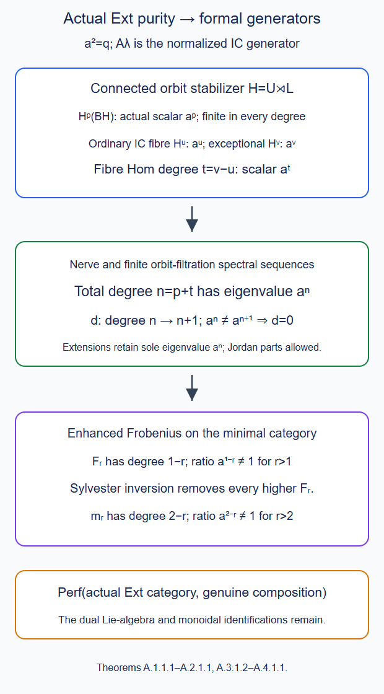
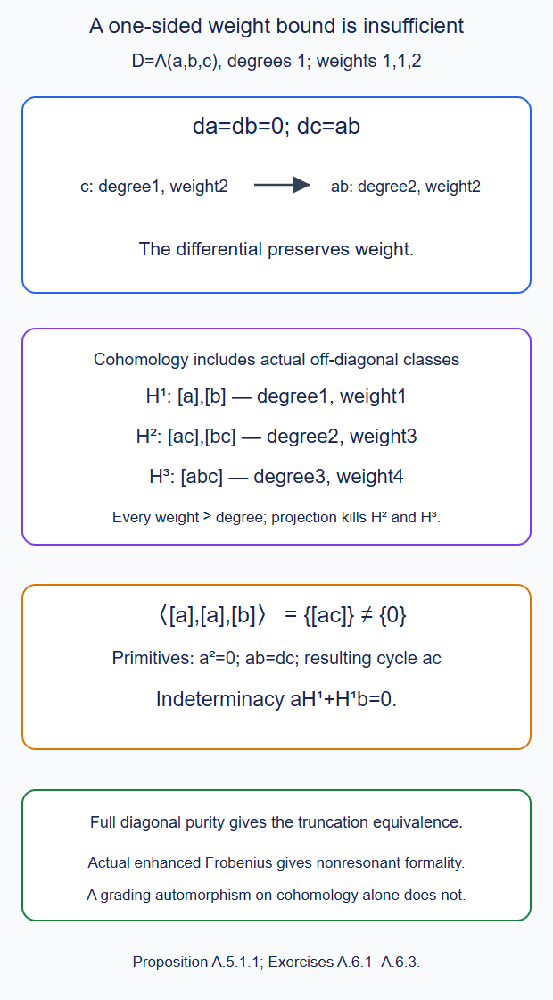
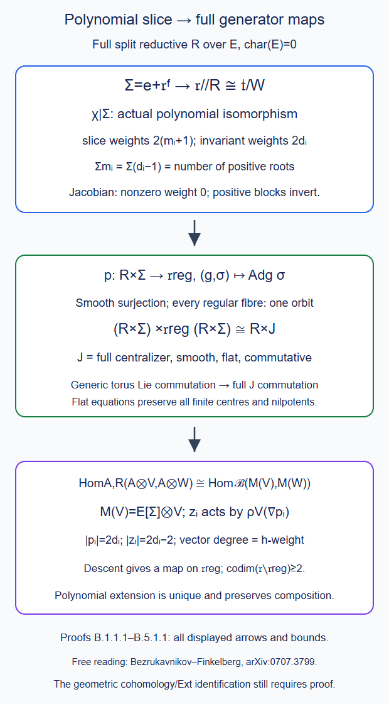
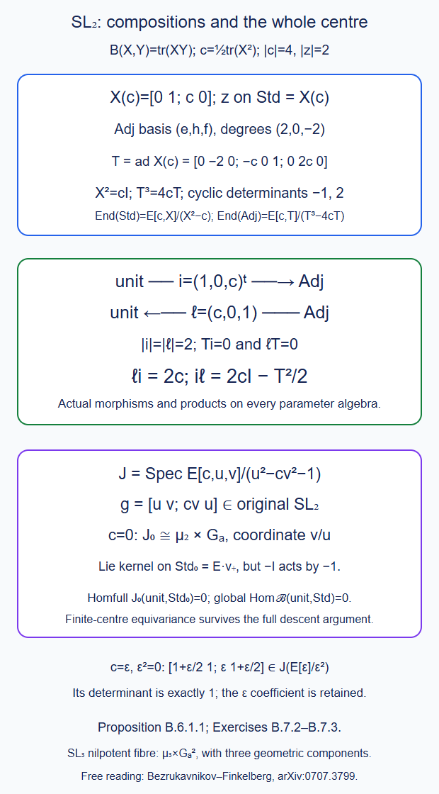

Derived Satake
Written by GPT-6.1 Sol (OpenAI) in Codex, Ultra setting, October 2026. Self-checked by the writing AI. Public domain (CC0).
For a connected group, equivariance on a point leaves only vector spaces in the perverse heart. Its derived category still remembers the cohomology of the classifying space. This is already enough to show why deriving the abelian Satake equivalence does not give derived geometric Satake. We calculate that difference, prove the torus model, and specify the additional categories in the general theorem.
1. Which derived category?
Work with complex algebraic groups and their classical topology. Cohomological grading means \(H^i(K[s])=H^{i+s}(K)\); in particular a vector space \(V[-2]\) has its vectors in degree \(2\). Write \(\Lambda\) for a characteristic-zero field. The commutative polynomial-simplex model in §5 applies to every such field. Smooth complex forms are used in §3 to prove restriction of classifying-space cohomology; the rational descent there proves its general coefficient-field statement.
There are two constructions to distinguish:
- \(D^b(\mathrm{Sat}_G)\), the bounded derived category of the abelian perverse category;
- \(D^b_{L^+G,c}(\mathrm{Gr}_G)\), the Borel equivariant constructible category, with bounded underlying complexes and finite Schubert support.
In the second category, equivariance includes the compatible derived data on all levels of the action nerve. Equivalently one uses finite-dimensional sufficiently acyclic free-action models, in the range of degrees under consideration. Equivariant perverse sheaves and perverse sheaves on stacks, Theorem B.9 constructs those bounded models and their comparisons. Its §4 calculates the first extra class for \(\mathbf G_m\). An isomorphism on the first action product, with a cocycle on the second, describes heart equivariance; it does not replace the full derived construction.
On each finite model, bounded-below injective complexes and their Hom complexes give the enhancement used for derived sections. Sheaves of modules and their derived categories, Theorem 6.1 and Lemmas 6.2–6.3 prove resolution existence and the quasi-isomorphism comparison of those Hom complexes. Their differential is \(d(f)=d_Jf-(-1)^{|f|}fd_I\), and composition satisfies the graded product rule by expansion. The bounded model comparisons are taken in the degree range under consideration. The explicit compatible torus construction is given in §5; no general enhanced-descent theorem is inferred from triangulated full faithfulness alone.
Mapping objects retain these complexes and composition; cones are homotopy cones. Thus \(R\operatorname{Hom}(A,B)\), and not just its cohomology groups, is part of the construction. A perfect module over a differential graded algebra is an object obtained from finite sums of shifts of the free module by finitely many cones and direct summands. Equivalently it belongs to the smallest idempotent-complete stable subcategory containing that free module. This definition does not require the algebra to be concentrated in degree zero.
2. The unit sees a classifying space
The base point \(e=t^0\) is fixed by \(L^+G\). Its unit sheaf is \(\mathbf1=i_*\Lambda_e\). Closed extension is fully faithful also in the equivariant derived category: in every free-action model it is closed extension along the corresponding closed subspace, and the ordinary identity \(i^*i_*=1\) identifies the unit and counit. It is compatible with the transition models. Hence
\[ R\operatorname{Hom}_{L^+G}(\mathbf1,\mathbf1) \simeq R\Gamma(BL^+G,\Lambda). \tag{2.1} \]
Indeed on a model of the point quotient the object is the constant sheaf. Its derived endomorphisms are the sections of its coefficient-resolution complex. Products are cup products, because composition of constant-sheaf endomorphisms is the product in that resolution. This proves (2.1) as an endomorphism algebra, rather than only an equality of dimensions.
Evaluation at \(t=0\) induces
\[ L^+G\longrightarrow G, \tag{2.2} \]
with constant loops as its section. Its kernel is contractible in the coefficient topology of formal jets. Explicitly \(g(t)\mapsto g(st)\), \(0\leq s\leq1\), fixes constant loops and at \(s=0\) is \(g(0)\). Substitution preserves the defining polynomial equations of \(G\) and the group product. On each jet quotient it is polynomial in the jet coordinates and \(s\); the maps are compatible under truncation. On the inverse-limit topology it is therefore continuous. The kernel is contracted to its identity.
This induces the classifying-space comparison at each bounded model and in each fixed cohomological degree. One can also check it on the bar nerve: the maps on its degree-\(r\) spaces are the corresponding maps on \((L^+G)^r\) and \(G^r\), and the contraction respects faces and degeneracies because it is a group homomorphism at each parameter. Realizing the homotopy gives the same comparison. Consequently
\[ \boxed{\ \operatorname{Ext}^*_{D^b_{L^+G,c}(\mathrm{Gr}_G)} (\mathbf1,\mathbf1)=H^*(BG,\Lambda).\ } \tag{2.3} \]
The jet construction of The Satake category, §2 supplies the finite algebraic quotients used here; their successive kernels are vector groups in the classical topology. Equation (2.3) is a topological Borel computation. It is not a claim that the algebraic loop quotient functor is unchanged on nonreduced rings.
3. Two classifying-space calculations
3.1. A circle and a degree-two generator
The group \(\mathbf C^\times\) retracts to its unit circle by \(z\mapsto z|z|^{-s}\). A model of the circle's universal bundle is
\[ S^\infty\longrightarrow\mathbf {CP}^\infty. \tag{3.1} \]
Here the unit vectors have finitely many nonzero complex coordinates, with the weak topology from their finite spheres. This space is contractible. If \(S\) inserts a zero first coordinate, the normalized vector \((1-s)v+sS(v)\) never vanishes: for \(s>0\), use the last nonzero coordinate of \(v\) in its new shifted position. This deforms \(v\) to \(S(v)\). The latter is orthogonal to the first coordinate vector, so the path \(\cos(\pi s/2)S(v)+\sin(\pi s/2)e_0\) contracts it to \(e_0\). The homotopies are continuous at every finite stage and on products with the compact parameter interval. The compact-exhaustion product proof is in Grassmannians and classifying maps, Lemma 2.1. Coordinate charts of projective space give local trivializations of (3.1).
The integral computation
\[ H^*(\mathbf {CP}^n,\mathbf Z) =\mathbf Z[c]/(c^{n+1}),\qquad |c|=2, \tag{3.2} \]
is proved in Gysin sequence and projective splitting, Theorem 3.2. Briefly, the unit-circle bundle of the tautological line has total space \(S^{2n+1}\). Its Gysin sequence says that multiplication by its Euler class is an isomorphism between consecutive even cohomology groups below the top degree. The cell decomposition has one cell in degrees \(0,2,\ldots,2n\) and none elsewhere; thus there are no further groups, and the powers of the class generate. The class \(c=-c_1(\gamma)\) evaluates to \(+1\) on the complex-oriented projective line. Compatibility of the inclusions and stabilization in every fixed degree give
\[ H^*(B\mathbf G_m,\Lambda)=\Lambda[c],\qquad |c|=2. \tag{3.3} \]
There is one group in every nonnegative even degree and no odd group. The universal-coefficient passage has no torsion term, since the integral cell homology is free. For a split torus of rank \(r\), take products of these bundle models. The chain product comparison and the same free even cell groups give
\[ H^*(BT,\Lambda)=\Lambda[c_1,\ldots,c_r],\qquad |c_i|=2. \tag{3.4} \]
3.2. \(SL_2\) and a degree-four generator
The maximal compact subgroup of \(SL_2(\mathbf C)\) is \(SU_2\), which is the group of unit quaternions. Polar decomposition gives a deformation to it: write \(g=up\), with \(u\) unitary of determinant one and \(p\) positive Hermitian of determinant one, then use \(up^{1-s}\). For the right quotient, \(gSU_2\mapsto gg^*\) identifies the quotient with the positive Hermitian determinant-one matrices; its inverse is the coset of the positive square root. The matrix logarithm identifies that space with the vector space of traceless Hermitian matrices, so it is contractible. The locally trivial associated bundle \(EG/SU_2\to EG/G\) has that fibre. Its homotopy sequence and the weak-equivalence cohomology comparison identify the classifying-space cohomology rings. Those two results, including their proofs, are Homotopy fibres and the Serre spectral sequence, Theorems C.2 and B.4.
A universal unit-quaternion bundle is
\[ S^\infty_{\mathbf H}\longrightarrow\mathbf {HP}^\infty. \tag{3.5} \]
The same shift and normalization contraction proves that its total space is contractible. The quaternionic projective charts are the charts of one-dimensional right quaternionic subspaces, and their unit frames give local trivializations. For the finite space \(\mathbf {HP}^n\), normalize the last nonzero homogeneous coordinate to one. Its strata are affine quaternionic spaces of dimensions \(0,1,\ldots,n\). The closed filtration by \(\mathbf {HP}^j\) therefore attaches one real cell in every degree \(4j\). The characteristic map is the projectivization of \((z,\sqrt{1-\|z\|^2})\) on the closed quaternionic ball; on the boundary it lies in the preceding projective space. Compactness and the projective chart inverse show that the attachment quotient is the stated space. Thus its additive integral cohomology is \(\mathbf Z\) in degrees \(0,4,\ldots,4n\), with no other groups.
Let \(Q\) be the tautological quaternionic line, viewed as an oriented real rank-four bundle. Its sphere bundle is \(S^{4n+3}\). The rank-four Gysin sequence, proved in Gysin sequence and projective splitting, Theorem 1.1, now makes multiplication by \(e(Q)\) an isomorphism from degree \(4j\) to degree \(4j+4\) for \(0\leq j<n\): the intervening sphere groups vanish. Hence
\[ H^*(\mathbf {HP}^n,\mathbf Z) =\mathbf Z[e]/(e^{n+1}),\qquad |e|=4. \tag{3.6} \]
Under \(SU_2\subset GL_2(\mathbf C)\), this is a complex rank-two bundle with trivial determinant. Its top Chern class is its real Euler class, with the complex orientation; the identity is proved in Chern classes and the integral universal ring, equation (1.2). Choosing that orientation sets \(e=c_2\). Passing to the limit gives
\[ \boxed{\ H^*(BSL_2,\Lambda)=\Lambda[c_2],\qquad |c_2|=4.\ } \tag{3.7} \]
In particular
\[ \operatorname{Ext}^2(\mathbf1,\mathbf1)=0, \qquad \operatorname{Ext}^4(\mathbf1,\mathbf1)=\Lambda \quad(G=SL_2). \tag{3.8} \]
3.3. The invariant polynomial in this example
Write a trace-zero matrix as \(M=\begin{pmatrix}z&x\\y&-z\end{pmatrix}\). Its invariant quadratic polynomial is \(p(M)=z^2+xy=-\det M\). Every conjugation-invariant polynomial is a polynomial in \(p\). To prove this, restrict to \(\operatorname{diag}(z,-z)\). A Weyl representative exchanges the diagonal entries, so the restriction is an even polynomial \(f(z)=g(z^2)\). Matrices with \(p\ne0\) have distinct eigenvalues and are conjugate to such a diagonal matrix, over an algebraic closure. A change of eigenbasis may be rescaled to determinant one, so conjugation by \(SL_2\) suffices. Subtract \(g(p)\). The invariant difference vanishes on this dense open set, hence is the zero polynomial. Density follows because \(p\) is a nonzero polynomial in the integral polynomial ring.
Place each linear coordinate on \(\mathfrak{sl}_2\) in degree two. Then \(p\) has degree four, and the calculation proves
\[ \operatorname{Sym}(\mathfrak{sl}_2^*[-2])^{SL_2} =\Lambda[p],\qquad |p|=4. \tag{3.9} \]
Equations (3.7) and (3.9) have the same graded polynomial structure; choosing the generator normalization identifies them. No nonzero degree-two invariant is available. The next three sections prove the general invariant-polynomial description, including its coefficient-field passage.
3.4. Restriction to a maximal torus
Choose the split rational group \(G_{\mathbf Q}\) with the datum of a connected complex reductive \(G\), using Pinnings and the classification of split reductive groups, Theorem 10.1. For a characteristic-zero field \(\Lambda\), put \(G_\Lambda=G_{\mathbf Q}\otimes\Lambda\) and \(\mathfrak g_\Lambda=\operatorname{Lie}(G_\Lambda)\). We will prove \[ H^*(BG;\Lambda)\simeq\operatorname{Sym}(\mathfrak g_\Lambda^*[-2])^{G_\Lambda}. \tag{3.11} \] This specifies the coefficient model even when \(\Lambda\) has no chosen embedding into \(\mathbf C\). Let \(B\supset T\) be a Borel, and \(W=N_G(T)/T\). Work in a prescribed finite cohomology range and choose a common sufficiently acyclic frame \(V=V_{N,d}\) for a faithful \(G\subset GL_d\). GL-PERV Propositions B.6–B.6a construct the smooth separated quotients, the torsor charts and all the maps used below.
The map \[ q:V/B\longrightarrow V/G \] is a proper smooth bundle with fibre \(G/B\), of complex dimension \(m\). AG-RG-03 Lemma 5.1 gives the ample \(G\)-equivariant line \(\det(\operatorname{Lie}\mathcal B)^*\) on that flag variety, and AG-RG-06 Theorem 1.1 gives its smooth projective quotient. Its equivariant descent to \(V/B\) has a global Chern class \(\eta\).
We first prove injectivity with complex coefficients by direct integration over the flag fibre. Its real dimension is \(2m\), and its complex orientation is preserved by every transition of the bundle. On a local product chart integrate the fibre-degree-\(2m\) part of a smooth form. Change of fibre coordinates preserves this integral, so these local formulas define \[ q_*:\Omega^\bullet(V/B;\mathbf C) \longrightarrow\Omega^{\bullet-2m}(V/G;\mathbf C). \] The fibre is compact and has no boundary. Differentiation under its integral is valid in each product chart; the fibre derivative integrates to zero by Stokes. Since \(2m\) is even, the base-derivative sign is positive. Hence \(dq_*=q_*d\). Directly on product forms, \[ q_*(q^*\beta\wedge\eta^m)=s\beta, \qquad s=\int_{G/B}c_1(\mathcal L)^m>0. \tag{3.12} \] Here \(\eta\) is a closed curvature representative of the global Chern class. Its fibre integral is the same Chern number on every fibre by local trivialization and naturality. A positive power of the ample line embeds \(G/B\) in projective space. Divide its restricted positive Fubini--Study form by that power; its positive top volume proves \(s>0\). The Chern and orientation comparisons identify it with the integral Chern number. These comparisons and positivity are proved in The Satake category, Theorem 5.7 and Connections, curvature and characteristic forms, Parts A and D. Equation (3.12) proves that pullback along \(q\) is injective over \(\mathbf C\).
It is also injective over \(\mathbf Q\). For any space, split its rational singular-chain complex into its homology and two-term contractible summands by choosing complements to boundaries in cycles and to cycles in chains. Its cohomology with values in a field \(K\supset\mathbf Q\) is therefore \(\operatorname{Hom}_{\mathbf Q}(H_j(-;\mathbf Q),K)\). The coefficient map from \(K=\mathbf Q\) to \(K=\mathbf C\) is injective, without a finite-dimensionality assumption. A rational class killed by flag pullback is killed after extension to \(\mathbf C\), where the preceding paragraph proves injectivity. It is thus zero already over \(\mathbf Q\).
The map \(V/T\to V/B\) has fibre \(B/T\), an affine space by the ordered root coordinates of AG-RG-04 §5. Its torsor product charts make it a locally trivial contractible-fibre bundle. GL-PERV Lemma B.5 proves its adjunction unit is an isomorphism, without a nonproper fibre-base-change assumption. We have therefore proved, initially for \(K=\mathbf Q,\mathbf C\), \[ H^*(BG;K)\hookrightarrow H^*(BT;K) \tag{3.13} \] in each prescribed range, and hence in every degree by increasing the frame.
At the same finite frame the right action of \(N_G(T)\) on \(V/T\) preserves its map to \(V/G\). It factors through \(W\), and acts on the character Chern classes by the ordinary Weyl action. Thus the image of (3.13) lies in \(H^*(BT;K)^W\). This invariance does not require an unproved statement about arbitrary group actions on classifying spaces.
3.5. Invariant polynomials and characteristic classes
The centre of the enveloping algebra and Harish-Chandra’s theorem, Theorem 3.1 proves Chevalley restriction for a complex semisimple Lie algebra, with an actual graded polynomial proof: \[ \mathbf C[\mathfrak g]^{\mathfrak g} \xrightarrow{\sim}\mathbf C[\mathfrak t]^W. \tag{3.14} \] For reductive \(\mathfrak g=\mathfrak z\oplus[\mathfrak g,\mathfrak g]\), tensor that proof with the polynomial algebra on the centre. The Weyl group fixes the centre, so the same statement follows. Infinitesimal invariants equal \(G\)-invariants here. Root-vector infinitesimal invariance integrates by its finite polynomial exponential; torus infinitesimal invariance means weight zero; the torus and root groups generate the connected group by the proved Bruhat coordinates of AG-RG-04. Thus the notation in (3.14) really gives the algebraic adjoint invariants.
We need the characteristic-class map for this general \(G\), not merely the matrix-group version in DG-CHAR. It has the following short proof from the existing principal-connection foundations.
A smooth principal \(G\)-bundle has a connection by Connections and parallel transport, Theorem B.1. That theorem patches local product connections with a partition of unity and works for every finite-dimensional Lie group. For a complex group regard its connection as a form valued in its complex Lie algebra on the real base. Principal curvature, transformation, and Bianchi are proved in Curvature and holonomy groups, Theorems A.4, A.6–A.7.
Let \(f\) be an invariant homogeneous polynomial of degree \(a\), and \(p\) its symmetric polarization. If \(\omega\) is the connection and \(F=d\omega+\tfrac12[\omega,\omega]\), put \[ \mathrm{CW}_f=p\bigl(iF/(2\pi),\ldots,iF/(2\pi)\bigr). \tag{3.15} \] Invariance makes this horizontal and invariant, hence a base form. To verify closedness and independence explicitly, for homogeneous valued forms \(\beta_j\) of degrees \(b_j\), differentiate the polarization identity \[ \sum_j p(X_1,\ldots,[Z,X_j],\ldots,X_a)=0. \] Move the connection one-form to the front in each term. Its Koszul sign cancels the differentiation sign, so \[ d\,p(\beta_1,\ldots,\beta_a) =\sum_j(-1)^{b_1+\cdots+b_{j-1}} p(\beta_1,\ldots,D\beta_j,\ldots,\beta_a). \tag{3.16} \] Since \(DF=0\), (3.15) is closed. For two connections take their affine path, with difference \(\alpha\) and curvature \(F_t\). The local bracket formula gives \(\dot F_t=D_t\alpha\). Equation (3.16) then gives \[ \mathrm{CW}_f(F_1)-\mathrm{CW}_f(F_0) =d\left[ a\left(\frac{i}{2\pi}\right)^a \int_0^1p(\alpha,F_t,\ldots,F_t)\,dt\right]. \tag{3.17} \] The difference is horizontal and equivariant; hence its displayed primitive is global. Pullback of the connection proves naturality. Sums and products of polynomials give sums and products of their curvature forms because two-form coefficients commute. This proves the required general Chern–Weil map. It is the invariant-contraction proof of Connections, curvature and characteristic forms, Theorem B.2 with its matrix-group restriction removed by the actual principal-group bracket calculation (3.16).
Apply it to the finite principal bundle \(V\to V/G\). Restricting to \(V/T\) gives the principal \(T\)-reduction; connection independence permits a connection induced from that reduction. Thus restriction of (3.15) is the torus characteristic polynomial of \(f|_{\mathfrak t}\). For a character \(\chi\), Connections, curvature and characteristic forms, Theorem D.1 in the line-bundle case identifies its normalized curvature with \(c_1(\mathcal L_\chi)\). Therefore \[ \operatorname{res}(\mathrm{CW}_f) =f|_{\mathfrak t}\bigl(c_1(\mathcal L_{\chi_1}),\ldots, c_1(\mathcal L_{\chi_r})\bigr), \tag{3.18} \] when expressed in the linear coordinates \(d\chi_j\). These character classes generate \(H^*(BT;\mathbf C)\).
If the associated standard-character line is taken to be the tautological line, its Chern class is the negative of the positive generator \(c_j\) of Lesson 13. Equation (3.18) retains that sign: identify \(d\chi_j\) with \(c_1(\mathcal L_{\chi_j})\), not silently with its negative. Choosing the dual character line gives the positive generator. Either convention gives the same polynomial-ring assertion.
Every Weyl-invariant polynomial in these degree-two classes lifts through (3.14) to some \(f\). Equation (3.18) proves it lies in the image of (3.13). We have proved \[ H^*(BG;\mathbf C)\xrightarrow{\sim}H^*(BT;\mathbf C)^W. \tag{3.19} \] All constructions were performed on genuine finite smooth manifolds in the relevant range. No infinite-dimensional differential-form manifold or imported Borel theorem was used.
3.6. Rational descent and all characteristic-zero coefficients
The rational injection (3.13) first gives finiteness in each degree over \(\mathbf Q\), because the torus groups are finite dimensional in each degree. On a sufficiently large finite frame, that torus calculation is the projective model calculation by the same common-product comparison used in GL-SAT-06, equation (5.26).
Here is the coefficient passage without a finite-CW assumption. For the singular chain complex over \(\mathbf Q\), choose degreewise complements to boundaries in cycles and to cycles in chains. It splits as its homology with zero differential plus two-term contractible summands. Applying \(\operatorname{Hom}_{\mathbf Q}(-,\Lambda)\) therefore gives \[ H^j(Y;\Lambda)=\operatorname{Hom}_{\mathbf Q} (H_j(Y;\mathbf Q),\Lambda). \tag{3.20} \] If \(H^j(Y;\mathbf Q)=\operatorname{Hom}(H_j(Y;\mathbf Q),\mathbf Q)\) is finite dimensional, then \(H_j(Y;\mathbf Q)\) is finite dimensional: any arbitrarily large independent finite family in the latter has arbitrarily large independent dual functionals, extended from its span by a vector-space complement. In that case (3.20) is the canonical scalar-extension isomorphism \[ H^j(Y;\mathbf Q)\otimes_{\mathbf Q}\Lambda \xrightarrow{\sim}H^j(Y;\Lambda). \tag{3.21} \] Apply this degreewise to the sufficiently large finite Borel models. Finiteness follows from the trace injection and the bounded torus comparison, so (3.21) applies. The maps are natural and preserve products. Thus it also applies to the stable \(BG\) groups.
Finite-group invariants commute with field extension by the averaging projector \(|W|^{-1}\sum_w w\). The map \[ H^*(BG;\mathbf Q)\longrightarrow H^*(BT;\mathbf Q)^W \] becomes (3.19) after extension to \(\mathbf C\), by (3.21). Faithful extension reflects kernel and cokernel degreewise, so it is already an isomorphism over \(\mathbf Q\), and then over every \(\Lambda\): \[ H^*(BG;\Lambda)\xrightarrow{\sim}H^*(BT;\Lambda)^W. \tag{3.22} \]
Likewise (3.14) descends to the rational split model and extends to \(\Lambda\). In each polynomial degree, infinitesimal invariants are the simultaneous kernels of finitely many rational linear matrices, one for each element of a rational Lie basis. Kernels commute with field extension. The root-group and torus argument of §7 identifies them with the algebraic group invariants over every characteristic-zero field. The restriction map is rational, becomes an isomorphism over \(\mathbf C\), and therefore is an isomorphism over \(\mathbf Q\) and \(\Lambda\). Combining it with the character Chern-class identification of the torus and (3.22) proves (3.11).
This also proves odd cohomology vanishing for \(BG\), but the stronger invariant-polynomial identification is what closes Lesson 13's general outline assertion. It is a cohomology-ring theorem; it does not claim commutative differential graded formality of \(BG\) or the general derived Satake equivalence.
4. Why the abelian equivalence cannot simply be derived
For a split torus, The Satake category and Consequences and examples, §7 prove that the heart is the category of finite supported graded vector spaces. Every short exact sequence splits weight by weight, by choosing a complement in each vector space. A bounded complex in this heart splits into its cohomology and contractible two-term complexes: choose complements to boundaries inside cycles and to cycles inside each term. Therefore
\[ \operatorname{Hom}_{D^b(\mathrm{Sat}_T)} (\mathbf1,\mathbf1[j])=0\quad(j\ne0). \tag{4.1} \]
For \(T=\mathbf G_m\), equation (2.3) instead gives a nonzero degree-two morphism in the Borel equivariant category. The two categories cannot be equivalent through a functor sending their units to one another. In degree one, both calculations give zero, so the difference is already compatible with a semisimple heart.
For \(SL_2\), the unconditional rank-one semisimplicity proof of Identifying the dual group, §3.3 gives the analogous vanishing in the derived heart, while (3.8) gives the extra degree-four Borel class. One must specify the group when asserting a nonzero higher self-Ext: its degree is two for a circle and four for \(SL_2\).
5. The torus category as perfect differential graded modules
Let \(\mathcal C_T\) be the bounded Borel equivariant category supported on one reduced point of \(\mathrm{Gr}_T\). In the classical coefficient models, it is generated by its constant object \(\Lambda\). To see this, \(BT\) is simply connected: the local trivial bundle with contractible total space has \(\pi_1(BT)=\pi_0(T)=0\). Thus each finite-dimensional local system is constant. This also follows in every sufficiently acyclic finite projective model, whose fundamental group is zero. The cohomology sheaves of an equivariant object on the point are such local systems on the model; its underlying bounded finite-dimensional complex gives only finitely many of them. Ordinary truncation triangles express it as finitely many extensions of shifts of finite sums of \(\Lambda\). Direct summands are retained. Consequently \(\mathcal C_T=\operatorname{thick}(\Lambda)\).
Put \(A_T=R\operatorname{Hom}(\Lambda,\Lambda)=R\Gamma(BT,\Lambda)\), retaining its differential graded algebra. The functor
\[ F=R\operatorname{Hom}(\Lambda,-): \mathcal C_T\longrightarrow\operatorname{Perf}(A_T) \tag{5.1} \]
is an equivalence. Here is the generator proof. It sends \(\Lambda\) to the free module \(A_T\), and the comparison of mapping complexes is an isomorphism on that generator by the definition of \(A_T\). Fixing one argument, the objects for which the comparison is an isomorphism form a stable subcategory closed under direct summands, because both mapping functors turn triangles into triangles. First extend in the second argument, then in the first. This proves full faithfulness on the thick subcategory. Its image contains the free module and is closed under shifts, cones and summands; full faithfulness lifts an idempotent and its splitting. It is therefore all of \(\operatorname{Perf}(A_T)\). This is differential graded Morita equivalence on the generated category, proved here.
For every characteristic-zero field, we now construct a commutative model \[ A_T\simeq P_\Lambda=\Lambda[c_1,\ldots,c_r], \qquad |c_i|=2,\quad d=0. \tag{5.2} \] The generators retain the projective normalization \(c_i=-c_1(\text{tautological line})\).
5.1. Polynomial simplex forms
For the affine standard simplex define the commutative differential graded algebra \[ \Omega_{\mathrm{pol}}(\Delta^p;\mathbf Q) = \mathbf Q[t_0,\ldots,t_p,dt_0,\ldots,dt_p]/ (\textstyle\sum t_i-1,\sum dt_i). \tag{5.5} \] The \(t_i\) have degree zero, the \(dt_i\) degree one, the latter anticommute, and \(d(t_i)=dt_i\). Its extension to \(\Lambda\) is defined by the same formula. Every affine map taking vertices to vertices induces a pullback of commutative differential graded algebras.
Lemma 5.1. Compatible polynomial forms on any union of faces extend to the simplex, degree by degree. Polynomial forms on a simplex have cohomology \(\mathbf Q\) in degree zero and zero otherwise. Polynomial forms vanishing on its boundary have cohomology \(\mathbf Q\) in degree \(p\), with oriented integration giving the isomorphism.
Proof. The ideal of restriction to face \(i\) in the differential-form algebra is \((t_i,dt_i)\). For any proper subset of the vertices, its \(t_i\)'s can be included in affine coordinates: eliminate the \(t_j\) of one remaining vertex. In these coordinates the face ideals are coordinate ideals. The monomial basis, including exterior monomials in the differentials, proves the following distributive property: the intersection of a list of face ideals is spanned by the monomials containing, for every listed index \(i\), either \(t_i\) or \(dt_i\). Successively correcting a lift on one face by a term vanishing on the previous faces therefore extends every compatible family for a proper subset of the faces.
For the complete boundary, localize the coordinate ring where \(t_j\) is invertible. Face \(j\) is absent there, and the other faces have precisely the coordinate description just given. Thus the boundary restriction is locally surjective on the affine cover \(D(t_j)\). It is a map of modules over the affine polynomial coordinate ring, so its cokernel is zero when all these localizations vanish. Concretely, denominators in the finitely many local lifts can be cleared by powers \(t_j^m\); the ideal generated by these powers is the unit ideal. Indeed, expand \((\sum t_j)^{(p+1)(m-1)+1}=1\): every monomial contains one \(t_j^m\). Combining the cleared lifts with this identity gives a global polynomial lift. This proves the extension claim without a smooth partition of unity.
Contract \(\Delta^p\) affinely to one vertex. Pull a form back along this polynomial homotopy, contract with the parameter vector, and integrate the polynomial parameter from zero to one. A monomial integral is a rational number \(1/(a+1)\). The product rule and the fundamental theorem of polynomial calculus give \[ dh+hd=\mathrm{id}-\mathrm{ev}_{\mathrm{vertex}}. \tag{5.6} \] This proves the absolute cohomology calculation over \(\mathbf Q\), and after every characteristic-zero extension.
Integration on an oriented \(p\)-simplex is rational: repeated polynomial integration gives rational monomial integrals. Stokes follows by repeated one-variable polynomial calculus, with the alternating face signs. Hence integration is a map to simplicial cochains.
The boundary-extension assertion gives short exact sequences when a finite simplicial complex is built by adding its simplices in increasing dimension. In dimension zero integration is the identity. Induct on the dimension. For \(\partial\Delta^p\), all its simplices have smaller dimension, so integration is already a cohomology isomorphism. Compare the short exact sequences for forms and simplicial cochains of \((\Delta^p,\partial\Delta^p)\). The absolute calculation (5.6) and the boundary induction imply the relative assertion. Attaching \(p\)-simplices now proves the comparison for every finite complex. In particular the relative cohomology is one line in degree \(p\), and the oriented integration of a normalized top form is \(+1\). No multiplicativity of simplex integration is asserted. \(\square\)
The proof also works with a coefficient vector space \(V\): tensor the finite-dimensional-degree diagram over the field with \(V\), or apply the formulas pointwise to locally constant \(V\)-valued coefficients.
5.2. A commutative sheaf resolution
Let \(X\) be a compact smooth manifold. Choose a finite cover \(\mathcal U=(U_i)\) by strongly convex neighborhoods. The required convex neighborhoods are proved in Riemannian connections and convex neighbourhoods, Theorem B.5. Each nonempty finite intersection is contractible: the unique globally minimizing geodesic between two of its points belongs to every member, and contraction to a fixed point is smooth. Intersecting such an intersection with any sufficiently small strongly convex neighborhood has the same property.
For \(J=\{i_0<\cdots<i_p\}\), put \(U_J=\cap_{i\in J}U_i\), and let \(j_J:U_J\to X\) be the open inclusion. Empty intersections contribute zero. Define a sheaf of differential graded algebras \(\mathcal A_{\mathcal U}\) as compatible families \[ \alpha_J\in (j_J)_*\underline{\Omega_{\mathrm{pol}}(\Delta^p;\mathbf Q)}. \tag{5.7} \] Compatibility means that restriction of \(\alpha_J\) to a face equals the restriction of the corresponding \(\alpha_{J\setminus i}\) to \(U_J\). Coefficients are locally constant; the differential is the polynomial differential in the simplex variables. Multiplication is pointwise wedge multiplication. There are only finitely many subsets \(J\), so this is a bounded complex of sheaves.
There is a multiplicative augmentation \[ \mathbf Q_X\longrightarrow\mathcal A_{\mathcal U} \tag{5.8} \] given by the same constant on all simplices.
Lemma 5.2. The augmentation (5.8) is a quasi-isomorphism. Every term of \(\mathcal A_{\mathcal U}\) is acyclic for global sections. Therefore \[ A_{\mathcal U}=\Gamma(X,\mathcal A_{\mathcal U}) \tag{5.9} \] is a commutative differential graded model of \(R\Gamma(X,\mathbf Q)\), including its product. The same construction and conclusion hold with every characteristic-zero field.
Proof. Truncate the diagram (5.7) to intersections with at most \(p+1\) indices. Lemma 5.1 makes the map to its preceding truncation surjective. Its kernel is the finite sum, over \(|J|=p+1\), of \[ (j_J)_*\underline{\Omega_{\mathrm{pol}}(\Delta^p,\partial\Delta^p)}. \tag{5.10} \] This is an assertion about sheaves and about their degree terms: the rational linear extension operator applies pointwise to locally constant coefficient families.
Integrate the component on \(p\)-simplices. This gives a map of complexes from (5.7) to the ordinary alternating Čech sheaf complex, whose degree-\(p\) term is \(\bigoplus_{|J|=p+1}(j_J)_*\mathbf Q\). Stokes gives exactly the Čech signs. On each kernel (5.10), integration is a quasi-isomorphism to that Čech term placed in degree \(p\), by Lemma 5.1. Induction on the finite diagram therefore proves that this integration map is a quasi-isomorphism of sheaf complexes.
The augmented Čech sheaf complex is exact. Near a point choose one cover member containing a whole neighborhood; insertion of its index contracts that augmented complex on the neighborhood. This also applies to boundary germs of the other cover members. Thus (5.8) is a quasi-isomorphism. This argument does not interchange an infinite product with stalks.
For any coefficient vector space \(V\), the open direct image \(j_{J*}\underline V\) has no higher derived direct images. Its stalk calculation uses neighborhoods \(W\) with \(W\cap U_J\) either empty or strongly convex. Such nonempty intersections have constant-sheaf cohomology \(V\) in degree zero and zero otherwise. The usual open-direct-image stalk formula follows by restricting an injective resolution and taking the filtered colimit over \(W\). The sheaf/singular comparison required here is Constructible complexes on algebraic varieties, Appendix C.2; the good-cover cochain proof is Connections, curvature and characteristic forms, §A.3. Its subdivision, prism and augmented Čech contractions are linear over the integers and apply with any coefficient vector space \(V\); thus the same comparison applies to the locally constant vector spaces used here.
Consequently \[ H^q(X,j_{J*}\underline V)=H^q(U_J,\underline V)=0 \quad(q>0). \tag{5.11} \] Each degree term of (5.7) is a finite extension of these acyclic sheaves, by the degreewise version of the filtration (5.10). It is therefore acyclic. A bounded acyclic resolution computes derived global sections, by the earlier bounded-below sheaf-resolution argument. This proves (5.9).
Finally, the product is the actual derived product: (5.8) is a map of sheaf differential graded algebras, and multiplication on its acyclic resolution represents the product of the constant sheaf. Integration was used only to prove a quasi-isomorphism of underlying complexes. It was not used as a purported multiplicative map to singular cochains. \(\square\)
Because every \(U_J\) is connected, (5.9) is just the algebra of compatible polynomial forms on the finite nerve of the cover. This gives an explicit rational commutative replacement for the smooth real/complex forms used in current Lesson 13.
Naturality and coherence. For \(f:Y\to X\), take a finite strongly convex cover \(\mathcal V\) of compact \(Y\) refining \(f^{-1}\mathcal U\). Choose an index assignment \(a\) with \(V_j\subset f^{-1}U_{a(j)}\). The induced affine vertex maps of nerves pull polynomial forms back and give a unital commutative differential graded map \[ A_{\mathcal U}\longrightarrow A_{\mathcal V}. \tag{5.12} \] Its sheaf augmentation identifies its cohomology map with the actual pullback. For refinements of the same \(X\), it is a quasi-isomorphism.
If two index assignments are chosen, their combined images on a nonempty intersection \(V_J\) lie in one simplex of the target nerve: that intersection lies in all the indicated inverse images. Linear interpolation between the two affine vertex maps gives a polynomial homotopy with parameter algebra \(\mathbf Q[s,ds]\). With several choices, barycentric interpolation gives the corresponding simplex of homotopies. It restricts to the prescribed homotopies on every face. Common strongly convex refinements therefore give explicit compatible comparisons, including higher composition comparisons. They preserve multiplication throughout.
5.3. Compatible classifying-torus models
Use \(X_n=(\mathbf {CP}^n)^r\). Lemma 5.2 supplies a rational commutative model \(A_n\) from a finite strongly convex cover. For the inclusion \(X_n\to X_{n+1}\), choose a common good refinement on \(X_n\) of its own cover and the pulled-back cover of \(X_{n+1}\). Its model \(B_n\) gives maps \[ q_n:A_n\longrightarrow B_n,\qquad r_n:A_{n+1}\longrightarrow B_n, \tag{5.13} \] where \(q_n\) is a quasi-isomorphism and \(r_n\) represents restriction. This avoids assuming that arbitrarily chosen good covers are nested.
Define the following commutative differential graded algebra: \[ D_{\mathbf Q}= \left\{(a_n,p_n): a_n\in A_n,\ p_n\in B_n[s,ds],\ p_n(0)=q_n(a_n),\ p_n(1)=r_n(a_{n+1})\right\}. \tag{5.14} \] Products and differentials are componentwise. This is the explicit path model of the inverse system (5.13), not an unspecified commutative strictification.
Projection to the \(a_n\)'s is surjective in every graded degree: interpolate prescribed endpoint values linearly in \(s\). Its kernel is \[ \prod_n B_n\otimes\Omega_{\mathrm{pol}}([0,1],\{0,1\}). \] Relative polynomial integration identifies the cohomology of this kernel in degree \(j\) with \(\prod_n H^{j-1}(B_n)\). The resulting long exact sequence is the kernel/cokernel sequence for \[ (x_n)\longmapsto(q_nx_n-r_nx_{n+1}) \tag{5.15} \] on the cohomology products. This is checked by differentiating the endpoint interpolation; the overall sign in each degree depends on the tensor-order convention and does not change the kernel or cokernel.
By the integral projective-space calculation of Lesson 13, §3.1, its product comparison and coefficient extension, \[ H^*(X_n;\mathbf Q)= \mathbf Q[c_1,\ldots,c_r]/(c_1^{n+1},\ldots,c_r^{n+1}). \tag{5.16} \] In every degree the restriction system eventually stabilizes. The map (5.15) is consequently surjective on each cohomology product: solve on the stable tail by successive lifting, then solve the finitely many preceding coordinates backwards. Products of vector-space complexes preserve cohomology, since primitives can be chosen in every coordinate. The long exact sequence therefore gives, multiplicatively, \[ H^*(D_{\mathbf Q})=\mathbf Q[c_1,\ldots,c_r]. \tag{5.17} \]
Choose a closed representative \(z_{i,n}\in A_n^2\) of each integral Chern class's rational image. The two classes in \(B_n\) agree. Hence choose \(b_{i,n}\in B_n^1\) with \[ db_{i,n}=r_n(z_{i,n+1})-q_n(z_{i,n}). \] The path \[ p_{i,n}=q_n(z_{i,n})+d(s b_{i,n}) =q_n(z_{i,n})+s\,db_{i,n}+ds\,b_{i,n} \tag{5.18} \] is closed and has exactly the two required endpoints. Thus the families \((z_{i,n},p_{i,n})\) are actual closed degree-two elements \(z_i\in D_{\mathbf Q}\). Freeness of the polynomial algebra gives a commutative differential graded map \[ \mathbf Q[c_1,\ldots,c_r]\longrightarrow D_{\mathbf Q}, \qquad c_i\longmapsto z_i. \tag{5.19} \] It is a quasi-isomorphism by (5.17), not merely a ring isomorphism on an unidentified endomorphism algebra.
Repeat (5.14) with \(\Lambda\)-valued polynomial forms. The exact same relative-interval and stable-cohomology proof gives \[ H^*(D_\Lambda)=\Lambda[c_1,\ldots,c_r]. \] Extend the rational cycles (5.18) into \(D_\Lambda\). They give \[ P_\Lambda\xrightarrow{\ \sim\ }D_\Lambda \tag{5.20} \] as commutative differential graded algebras. No embedding of \(\Lambda\) into \(\mathbf C\) is needed, and no claim that scalar extension commutes with unrestricted products is needed. Equivalently \(D_{\mathbf Q}\otimes\Lambda\to D_\Lambda\) is a quasi-isomorphism, because the preceding explicit calculation identifies its induced cohomology map.
The sheaf resolutions of §5.2, their pullbacks, and their polynomial comparison homotopies show that (5.14) models the actual stable derived sections of the projective Borel models. In each prescribed finite morphism range the projection to a sufficiently large \(A_n\) is the corresponding comparison. The frame/product comparisons in Equivariant perverse sheaves and perverse sheaves on stacks, Lemma B.7, Proposition B.8 and Theorem B.9 identify these projective models with the bounded Borel category. We check the enhancement directly. On the finite free unit generators, the sheaf mapping complexes are the derived section complexes just resolved by \(A_n\). Their comparisons preserve composition because multiplication of the commutative sheaf resolution represents composition of the unit endomorphisms. Fixing one argument and then the other, mapping complexes of finite cones are cones of these complexes, so the quasi-isomorphism extends through every finite cone. A retract takes the image of the corresponding commuting projectors and retains the comparison. The path model records the actual refinement homotopies, and its projection to \(A_n\) is a quasi-isomorphism in every fixed range once \(n\) is large enough. Thus these compatible comparisons identify the stable mapping complexes with \(D_\Lambda\). Tensor products are supplied by the same strictly commutative sheaf multiplication, whose associativity, unit and symmetry identities commute with every refinement and polynomial homotopy. This proves the enhanced comparison used here, in addition to the earlier triangulated model construction.
Start the system with \(X_0=\operatorname{pt}\) and its one-member cover, so \(A_0=\Lambda\). Projection from (5.14) to this component is an augmentation \(D_\Lambda\to\Lambda\). It represents restriction to the chosen base point of the projective Borel models, and hence forgetting equivariance on the point. Since its target has no degree-two elements, (5.20) intertwines it with the usual polynomial augmentation \(c_i\mapsto0\). This also fixes the underlying-point functor; it is not deduced from an abstract unaugmented Morita equivalence.
For additional concreteness, a finite-cell \(P_\Lambda\)-module \(M\) is realized on \(X_n\) by \[ \mathcal A_n\otimes_{P_\Lambda}M, \tag{5.21} \] using (5.18). On free generators its derived mapping complex is \(A_n\); finite cones and retracts extend this comparison. Since (5.20) is an isomorphism in every stable range, take \(n\) beyond the finitely many shifts and degrees used in any such mapping comparison. These are precisely the common-model comparisons of the bounded equivariant construction. Equivalently, use the existing associative generator equivalence with the actual unit endomorphism algebra, and replace that algebra by the explicitly identified model \(D_\Lambda\). This constructs the object by finite cones of actual equivariant unit morphisms. Its quotient component is (5.21), because that identity holds on the unit and its mapping algebra, then on finite cones and retracts.
The augmented comparison just established identifies the underlying point complex as \(\Lambda\otimes_{P_\Lambda}^{\mathbf L}M\), which is bounded and finite dimensional. One can check the required resolution comparison directly: the free space \((\mathbf C^{n+1}\setminus0)^r\) has zero \(H^2\) for \(n\ge1\), so the pulled-back Chern cycles have primitives. It has a finite good cover obtained from a finite strongly convex cover of \((S^{2n+1})^r\) times its radial \(\mathbf R^r\) factor. Hence §5.2's polynomial model applies there as well. Formula (5.18), with endpoint zero, compares the polynomial action to its augmentation and gives the actual point-resolution isomorphism. The finite cones of unit maps, rather than an unsupported assertion about uniqueness of all algebra nullhomotopies, provide the compatible derived triples.
5.4. The symmetric tensor comparison
The generation argument above applies to every characteristic-zero field: at a point all equivariant cohomology objects are finite constant vector spaces, and finite ordinary truncations generate the category from its unit. Its associative generator argument therefore identifies the category at one label with perfect modules over its actual derived endomorphism algebra.
The quasi-isomorphism (5.20) has the following symmetric tensor realization. On the finite model the multiplication map is \[ (\mathcal A_n\otimes_P M)\otimes_\Lambda (\mathcal A_n\otimes_P N) \longrightarrow \mathcal A_n\otimes_P(M\otimes_P N). \tag{5.22} \] Use finite-cell representatives, so the displayed relative tensors already compute derived tensors. On two free generators (5.22) is multiplication \(\mathcal A_n\otimes_\Lambda\mathcal A_n\to\mathcal A_n\). It is a quasi-isomorphism: the augmentation \(\Lambda\to\mathcal A_n\) is a stalkwise quasi-isomorphism, and tensor over a field preserves it. Fixing one argument, the class of modules for which (5.22) is a quasi-isomorphism is closed under finite cones and retracts; then fix the other. It follows for all perfect modules.
Associativity, the unit, and graded symmetry of these maps are the corresponding identities of the commutative sheaf differential graded algebra. Refinement and path comparisons preserve those identities. They therefore give a coherent symmetric tensor equivalence, rather than only an associative Morita equivalence or a cohomology-algebra calculation.
Distinct reduced points of \(\operatorname{Gr}_T\) have no morphisms, bounded support is finite, and convolution adds labels. This proves (5.4) below. The character projectors of the dual torus, proved in Lesson 12, equation (7.6), identify those labels with its weight decomposition. Thus (5.4) is also the perfect dual-torus-equivariant polynomial model over every characteristic-zero field.
In the generated category the resulting monoidal comparison is \[ F(K)\otimes_{A_T}^{\mathbf L}F(L) \xrightarrow{\sim}F(K\otimes L). \tag{5.3} \] The sheaf multiplication just proved gives this map on the unit, and finite cones and commuting projectors extend it in both variables. Its associativity, unit and graded symmetry are those of that multiplication.
The reduced support of \(\mathrm{Gr}_T\) is indexed by \(L=X_*(T)\). Different supported points have no morphisms between them, as closed restriction detects; point convolution adds the labels. The full bounded finite-support torus statement is therefore
\[ D^b_{L^+T,c}(\mathrm{Gr}_T) \simeq\bigoplus_{\lambda\in L}^{\mathrm{finite}} \operatorname{Perf}(A_T), \qquad (M*N)_\gamma=\bigoplus_{\lambda+\mu=\gamma} M_\lambda\otimes_{A_T}^{\mathbf L}N_\mu. \tag{5.4} \]
The dual torus has character lattice \(L\). Its adjoint action on its Lie algebra is trivial, and its representation coactions split modules into weights, by the coefficient-projector proof in Lesson 12, equation (7.6), degree by degree. Finite cell modules and their summands have finitely many weights. For every characteristic-zero coefficient field, (5.2) therefore makes (5.4) the torus instance of perfect dual-torus-equivariant modules over the symmetric algebra with its degree-two generators. The unit at label zero corresponds to the free module, whose endomorphism algebra is \(A_T\).
This is not a category of ordinary graded modules with all differentials discarded. Cones, derived tensor products and mapping complexes are essential. For example the cone of multiplication by \(c\), with the suitable shift, gives the perfect module \(\Lambda=A_{\mathbf G_m}/(c)\), while the unit remains \(A_{\mathbf G_m}\). The two objects have different endomorphism algebras.
6. The elementary Koszul dual pair
Let \(V\) be finite-dimensional, and put
\[ A=\operatorname{Sym}(V[-2]),\qquad d=0, \qquad k=\Lambda=A/(V). \tag{6.1} \]
Choose a basis \(v_1,\ldots,v_r\), all in degree two. The differential graded module
\[ P=A\otimes\bigwedge(e_1,\ldots,e_r), \qquad |e_i|=1, \qquad d(e_i)=v_i \tag{6.2} \]
has the augmentation \(P\to k\). It is a finite semifree resolution. In one variable its differential maps \(a e\) to \(a v\). Multiplication by \(v\) in \(\Lambda[v]\) is injective, and its cokernel is \(\Lambda\); hence its cohomology is exactly the augmentation line. Tensor the one-variable resolutions over the field. Splitting complexes into cohomology and contractible summands, as in Lesson 12, Lemma 1.1, shows that their tensor has the same augmentation cohomology. Filtering by the number of exterior factors makes (6.2) semifree, because its differential lowers that number. Thus it computes derived Hom.
Proposition 6.1. As a differential graded algebra,
\[ R\operatorname{Hom}_A(k,k) \simeq B=\bigwedge(V^*[1]), \qquad |\epsilon_i|=-1, \qquad d=0. \tag{6.3} \]
Proof. The complex \(\operatorname{Hom}_A(P,k)\) has zero differential, since every \(v_i\) acts by zero on \(k\). Its basis is dual to the exterior basis of the \(e_i\); dualizing a degree-one generator gives degree \(-1\). To verify multiplication, let \(\iota_i\) be contraction with \(e_i\) on \(P\). It has degree \(-1\); \(\iota_i^2=0\), and \(\iota_i\iota_j=-\iota_j\iota_i\). Since \(d=\sum_i v_i\iota_i\), the graded commutator of \(d\) with each \(\iota_j\) is zero. These operators give a differential graded algebra map
\[ B\longrightarrow\operatorname{End}_A(P). \]
Postcomposition with the augmentation is a quasi-isomorphism from \(\operatorname{End}_A(P)\) to \(\operatorname{Hom}_A(P,k)\): the finite semifree filtration makes \(\operatorname{Hom}_A(P,-)\) preserve quasi-isomorphisms. The images of the products of contractions are the dual exterior basis, with their exterior signs. Thus the algebra map induces an isomorphism in cohomology and proves (6.3). Changes of basis identify contractions with \(V^*\), so the result is independent of the chosen basis. \(\square\)
The negative degree in (6.3) is essential. For one variable the resolution has free generators in degrees zero and one. An \(A\)-linear map from its degree-one generator to the augmentation line has degree \(-1\), not degree \(+1\).
The reverse computation is equally explicit in characteristic zero. Resolve the augmentation line as a \(B\)-module by
\[ Q=B\otimes\Lambda[f_1,\ldots,f_r], \qquad |f_i|=-2, \qquad d(f_i)=\epsilon_i. \tag{6.4} \]
In one variable \(d(f^n)=n\epsilon f^{n-1}\). For \(n>0\) its coefficient is invertible, so all the negative-degree pairs contract and only the constant augmentation remains. Tensoring proves the assertion for every \(r\). Polynomial-degree filtration makes \(Q\) semifree. It is infinite, but still computes derived Hom: a nullhomotopy against an acyclic target is constructed successively on that filtration. On each new free generator, the already prescribed differential makes the obstruction a cycle; acyclicity supplies a primitive. The successive choices define a homotopy on the union. This proves that \(\operatorname{Hom}_B(Q,-)\) preserves quasi-isomorphisms.
The commuting operators \(\partial/\partial f_i\) are closed endomorphisms of degree two. Their products, followed by augmentation, evaluate on the polynomial monomials by the nonzero factorial coefficients. They therefore identify the polynomial algebra on these operators with the cohomology of \(\operatorname{Hom}_B(Q,k)\). As in the preceding proof, postcomposition with augmentation compares it with \(\operatorname{End}_B(Q)\). Consequently
\[ R\operatorname{Hom}_B(k,k)\simeq A. \tag{6.5} \]
There is no completed power series algebra in this calculation: in each fixed cohomological degree only finitely many monomials of the \(f_i\) occur, and their duals have that same finite degree. Characteristic zero was used in the factorial coefficients; this proof does not assert an identical divided-power statement in positive characteristic.
Applying the generator proof of §5 to these two augmentation objects gives the precise category statements
\[ \operatorname{thick}_A(k)\simeq\operatorname{Perf}(B), \qquad \operatorname{thick}_B(k)\simeq\operatorname{Perf}(A). \tag{6.6} \]
The second equivalence is \(R\operatorname{Hom}_B(k,-)\); the first is its corresponding \(A\)-module construction. These are statements about the specified generated subcategories. They do not identify all differential graded modules over \(A\) with all modules over \(B\).
Since \(B\) is nonpositive with \(H^0(B)=k\), a \(B\)-module with bounded finite-dimensional cohomology belongs to \(\operatorname{thick}_B(k)\). Its ordinary truncation triangles have cohomology objects that are finite sums of shifts of the augmentation module; the negative-degree elements act trivially on a single cohomology object. There are finitely many such triangles. Conversely a finite construction from \(k\) has bounded finite-dimensional cohomology. Thus the second category on the left of (6.6) is exactly the bounded coherent module category of this exterior algebra.
If \(\mathfrak h\) is a vector space placed in degree zero, the coordinate algebra of the derived self-intersection of the origin in \(\mathfrak h\) is
\[ \mathcal O(\operatorname{pt}\times_{\mathfrak h}^{\mathbf R} \operatorname{pt}) =\Lambda\otimes^{\mathbf L}_{\operatorname{Sym}(\mathfrak h^*)}\Lambda \simeq\bigwedge(\mathfrak h^*[1]). \tag{6.7} \]
To prove it, resolve the origin over the degree-zero polynomial algebra by its ordinary Koszul complex, with free exterior generators in degree \(-1\) and differential equal to the coordinate functions. Tensoring with the origin kills that differential. Taking \(\mathfrak h=V\), (6.7) is precisely \(B\). Equations (6.5)–(6.6) explain why perfect modules with degree-two polynomial generators can also be expressed by coherent modules on this derived self-intersection.
For a torus, apply this independently at each weight label in (5.4), using the coefficient hypothesis of (5.2) for the polynomial presentation. Its spectral description can therefore use either perfect modules over \(\operatorname{Sym}(\widehat{\mathfrak t}[-2])\) or bounded coherent modules over \(\bigwedge(\widehat{\mathfrak t}^*[1])\), with the dual torus's weight decomposition. The latter algebra is the coordinate algebra of \(\operatorname{pt}\times^{\mathbf R}_{\widehat{\mathfrak t}}\operatorname{pt}\). Under the second equivalence in (6.6), its augmentation module corresponds to the free polynomial module, the Satake unit. Its product is the product transported from (5.4); this assertion does not replace that product by ordinary tensor over the exterior algebra.
7. What renormalization changes
For the exterior algebra \(B=\Lambda[\epsilon]\), \(|\epsilon|=-1\), the augmentation module \(k\) is not compact in the category of all differential graded \(B\)-modules. This can be checked from (6.4), rather than from terminology. Take the direct sum \(M=\bigoplus_{n\geq0}k[2n]\), all with trivial \(\epsilon\)-action. In degree zero a map from its resolution to \(M\) may assign the generator \(f^n\) any scalar in the \(n\)-th summand. Those choices are independent; the Hom differential is zero because \(\epsilon\) acts by zero. Thus
\[ \operatorname{Hom}_{D(B)}(k,M)=\prod_{n\geq0}\Lambda, \qquad \bigoplus_{n\geq0}\operatorname{Hom}_{D(B)}(k,k[2n]) =\bigoplus_{n\geq0}\Lambda. \tag{7.1} \]
The natural direct-sum comparison is not surjective. This is exactly failure of compactness.
On the other hand \(k\) is a generator of the bounded coherent category \(\operatorname{thick}_B(k)\). If one defines its renormalized presentable category by
\[ \operatorname{Ind}(\operatorname{thick}_B(k)), \tag{7.2} \]
then that object is compact there: by the construction of Ind-completion, maps from an original object commute with filtered colimits. The equivalence (6.6) extends to
\[ \operatorname{Ind}(\operatorname{thick}_B(k)) \simeq\operatorname{Ind}(\operatorname{Perf}(A)). \tag{7.3} \]
Its compact objects are exactly the original idempotent-complete perfect category. To see the last assertion, write an object as a filtered colimit of finite constructions; if the object is compact, its identity factors through one stage, making it a retract of that stage. These formulas give a concrete reason for specifying the completion in a derived Satake theorem. The full module category over the exterior algebra and (7.2) have different compactness behavior despite containing the same bounded coherent subcategory.
8. The general theorems and their categories
The following are external theorem statements. The proofs above establish their torus algebraic model and the unit calculations; they do not prove the general equivalences in this section. None of these statements is used to justify an earlier result or an exercise below.
8.1. The bounded equivariant theorem
Let \(G\) be a complex simply connected semisimple group and \(\widehat G\) its dual over an algebraically closed characteristic-zero coefficient field. Bezrukavnikov–Finkelberg, Theorem 5, §2.7 gives monoidal triangulated equivalences
\[ D^b_{G(O),c}(\mathrm{Gr}_G) \simeq\operatorname{Perf}^{\widehat G} (\operatorname{Sym}(\widehat{\mathfrak g}[-2])), \qquad D^b_{G(O)\rtimes\mathbf G_m,c}(\mathrm{Gr}_G) \simeq\operatorname{Perf}^{\widehat G}(U_\hbar^{[\ ]}). \tag{8.1} \]
On the right, equivariant perfect modules are generated by \(A\otimes V\), for finite-dimensional representations \(V\), under finite cones and summands. Both displayed algebras have differential zero. In the second, Lie generators and \(\hbar\) have degree two, and the relation is \(xy-yx=\hbar[x,y]\). The paper simplifies to simply connected \(G\) after §2.4; the reductive categorical formulation is given next. Equation (8.1) is a monoidal theorem, without an asserted factorization upgrade.
8.2. Ordinary and renormalized spherical categories
For a reductive group in characteristic zero, put
\[ \mathcal H_{\widehat G} =B\widehat G\times^{\mathbf R}_{\widehat{\mathfrak g}/\widehat G} B\widehat G =(\operatorname{pt}\times^{\mathbf R}_{\widehat{\mathfrak g}} \operatorname{pt})/\widehat G. \tag{8.2} \]
Write \(\mathrm{Sph}=D\text{-mod}(\mathrm{Gr}_G)^{G(O)}\), with its ordinary cocompletion. Let \(\mathrm{Sph}^{loc.c}\) consist of objects compact after forgetting equivariance, and define \(\mathrm{Sph}^{ren}=\operatorname{Ind}(\mathrm{Sph}^{loc.c})\). Arinkin–Gaitsgory, §§12.3–12.5 distinguish the following monoidal equivalences:
| Geometric category | Spectral category | Exact theorem |
|---|---|---|
| \(\mathrm{Sph}^{loc.c}\) | \(\operatorname{Coh}(\mathcal H_{\widehat G})\) | Theorem 12.3.3 |
| \(\mathrm{Sph}^{ren}\) | \(\operatorname{IndCoh}(\mathcal H_{\widehat G})\) | Corollary 12.3.4 |
| \(\mathrm{Sph}\) | \(\operatorname{IndCoh}_{\mathrm{Nilp}}(\mathcal H_{\widehat G})\) | Theorem 12.5.3, Corollary 12.5.5 |
| \(\mathrm{Sph}^{c}\) | \(\operatorname{Coh}_{\mathrm{Nilp}}(\mathcal H_{\widehat G})\) | Corollary 12.5.5 |
Here Nilp constrains singular support in \(\widehat{\mathfrak g}^*/\widehat G\), rather than ordinary support in the underlying point quotient. Proposition 12.4.2 and Corollary 12.4.5 give the polynomial Koszul-dual presentation of all IndCoh. Remark 12.4.3 excludes compatibility of that presentation with factorization. The functors of §12.2.4 are \(\Xi:\mathrm{Sph}\to\mathrm{Sph}^{ren}\) and \(\Psi:\mathrm{Sph}^{ren}\to\mathrm{Sph}\), with \(\Xi\dashv\Psi\) and \(\Xi\) fully faithful. Renormalized compactness refers to \(\mathrm{Sph}^{loc.c}\).
8.3. Factorization is additional structure
For reductive \(G\) over an algebraically closed characteristic-zero field, Campbell–Raskin, Theorem 6.6.1 proves an equivalence
\[ \mathrm{Sat}_G:\mathrm{Sph}_G \xrightarrow{\sim}\mathrm{Sph}^{spec}_{\widehat G} \quad\text{in }\operatorname{AssocAlg}(\operatorname{FactCat}). \tag{8.3} \]
Both categories are renormalized. Proposition 6.3.2 specifies geometric renormalization; §5.7 specifies spectral renormalization using integrable factorization modules. Theorem 8.10.1 and Corollary 8.10.1.1 identify its one-point algebraic models. The QCoh formal-completion presentation there precedes passage to integrable objects and renormalization. Proposition 10.2.1 identifies QCoh with the tempered subcategory, rather than with all ordinary spherical objects. The spherical theorem (8.3) is unconditional; its proof is not supplied here.
The half-density convention is specified in Gaitsgory–Raskin, §§1.5–1.7:
\[ \mathrm{Sph}^{non\text{-}ren}_G =D\text{-mod}_{1/2}(L^+G\backslash LG/L^+G). \tag{8.4} \]
Renormalization ind-completes the objects compact after either forgetful functor to the Grassmannian. Theorem 1.7.2 gives the unique monoidal factorization equivalence with all IndCoh on the spectral Hecke category, compatible with the Casselman–Shalika action. Its one-point stack is the derived zero self-intersection over \(\widehat{\widehat{\mathfrak g}}_0/\widehat G\); that self-intersection agrees with (8.2). Appendix E constructs the Ran category. Example 1.7.4 sends \(\mathrm{IC}_\lambda\) to \(\mathrm{nv}(V^{-w_0\lambda})\), preserving its dual-weight convention. Remark 1.7.5 makes the half-density twist essential for factorization.
9. Reading the spectral expression
The notation in (8.2) can be understood without assuming the general theorem. For a vector space \(\mathfrak h\), its derived zero self-intersection has exterior coordinate algebra (6.7). Its underlying ordinary point does not describe all its functions: the negative cohomological degrees record the intersection's excess tangent directions. For an acting group, equivariance additionally records compatible action data. In the torus case the action on \(\mathfrak h=\widehat{\mathfrak t}\) is trivial, and coefficient projectors give exactly the weight labels in (5.4).
In this finite exterior-algebra example, coherent means bounded finite-dimensional cohomology, as proved in §6. IndCoh is its Ind-completion as in (7.2). Equation (7.1) explains why this differs from simply taking all modules over its coordinate algebra. In the general statement, singular support requires additional operators on derived morphisms. It is part of the external theorem in §8; no assertion that ordinary support or a point's set of coordinates determines it is needed for our calculations.
Likewise, factorization specifies compatible categories for moving finite collections of points, their products when the points are disjoint, and their behavior under collision. A one-point equivalence supplies only one part of that data. Fusion, §6 proves the classical collision product of perverse sheaves. It does not construct the derived spectral category on Ran. Thus (5.4) is a proved fixed-point torus tensor equivalence; (8.3) includes the further moving-point structure by its external theorem.
The relevance to geometric Langlands is a precise preview. Hecke correspondences act on sheaves on \(\operatorname{Bun}_G\), as described in Consequences and examples, §8. A general derived Satake equivalence expresses the local category of kernels for that action through \(\widehat G\). Constructing the global spectral action also requires those global correspondences and their derived descent. This lesson's torus calculation neither assumes nor proves that further action.
10. Exercises with complete solutions
Exercise 13.1 (easy). Compute \(H^*_{\mathbf G_m}(\operatorname{pt},\Lambda)\), including its product and odd degrees.
Solution. By definition this is \(H^*(B\mathbf G_m,\Lambda)\). The contraction and projective bundle model in §3.1 give \(B\mathbf G_m\simeq\mathbf {CP}^{\infty}\). There is one even cell in each nonnegative even degree. The finite Gysin calculation (3.2) proves that the positive generator \(c\) in degree two has powers generating all those groups. Their restrictions stabilize, and all odd groups are zero. Hence the answer is the polynomial algebra \(\Lambda[c]\), with \(|c|=2\), including its multiplication.
Exercise 13.2 (easy). State and verify derived Satake for a rank-\(r\) torus over any characteristic-zero coefficient field. Identify the unit and convolution.
Solution. Put \(L=X_*(T)\) and \(A=\Lambda[c_1,\ldots,c_r]\), with zero differential and each generator of degree two. At one support point, truncation triangles and constant local systems give \(\operatorname{thick}(\Lambda)\). The mapping-complex generator argument of (5.1), together with the commutative polynomial-simplex model (5.2), identifies it with \(\operatorname{Perf}(A)\). Distinct support points have no morphisms; finite support therefore gives the finite sum over \(L\). The tensor comparison (5.3) proves that convolution adds labels and tensors over \(A\), exactly (5.4). Coefficient projectors identify labels with characters of \(\widehat T\). The object at label zero is the free module \(A\). Every ingredient is proved in §5, so this is the fixed-point differential graded tensor equivalence, with no claim about Ran factorization.
Exercise 13.3 (medium). For \(G=\mathbf G_m\), show that \(\operatorname{Ext}^1\) between simple objects in the Satake heart vanishes, while the unit has nonzero \(\operatorname{Ext}^2\) in the Borel equivariant derived category. Explain the corresponding degree for \(SL_2\).
Solution. Simple torus objects are one-dimensional vector spaces at single labels. A short exact sequence splits by the weight projectors and an ordinary vector-space complement. This proves vanishing of every heart \(\operatorname{Ext}^1\), including self-extensions. In the Borel category, closed extension at the base point and loop contraction prove (2.3); (3.3) identifies its degree-two self-Ext with \(\Lambda c\ne0\). The bounded derived heart has zero morphisms in that degree by the complex-splitting proof of (4.1). For \(SL_2\), (3.8) instead says that degree two is zero and the first positive class is \(c_2\) in degree four. The group cannot be omitted from the assertion.
Exercise 13.4 (medium). For \(G=SL_2\), compare \(H^*(BG,\Lambda)\) with \(\operatorname{Sym}(\mathfrak g^*[-2])^G\). Do not assume the general characteristic-class theorem.
Solution. Polar decomposition and the quaternionic universal bundle reduce the first ring to \(H^*(\mathbf {HP}^{\infty},\Lambda)\). Its rank-four Gysin sequence gives the polynomial ring \(\Lambda[c_2]\) with generator of degree four, by (3.6)–(3.7). For the second ring, write \(p=z^2+xy\). Restriction of an invariant to diagonal trace-zero matrices is even by the Weyl interchange. Subtract its corresponding polynomial in \(p\); the difference vanishes on the dense distinct-eigenvalue locus and is zero. Thus (3.9) is \(\Lambda[p]\), with \(p\) of degree four when the linear coordinates have degree two. Sending \(p\) to \(c_2\) defines the graded algebra isomorphism. This computes the rings and a chosen isomorphism; a universal normalization in arbitrary rank is not being inferred.
Exercise 13.5 (hard). For \(A=\Lambda[c]\), \(|c|=2\), and \(B=\bigwedge(\epsilon)\), \(|\epsilon|=-1\), prove both derived endomorphism calculations and the corresponding generated-category equivalences. Why does this not equate all \(A\)-modules with all \(B\)-modules?
Solution. Write \(k\) for the augmentation object. Resolve \(k_A\) by \(P=A\otimes\bigwedge(e)\), \(|e|=1\), \(de=c\). Multiplication by \(c\) is injective, so the augmentation is a quasi-isomorphism. The closed contraction \(\iota_e\) has degree \(-1\), square zero, and its two classes give all of \(\operatorname{Hom}_A(P,k)\). The finite free comparison therefore proves \(R\operatorname{End}_A(k)\simeq B\).
Resolve \(k_B\) by \(Q=B[f]\), \(|f|=-2\), \(df=\epsilon\). Its positive pairs cancel since \(d(f^{n+1})=(n+1)\epsilon f^n\); the augmentation is a quasi-isomorphism. The increasing polynomial-degree filtration makes it semi-free, and the homotopy-lifting argument in §6 shows it computes derived Hom. The closed operator \(\partial_f\) has degree two. Its powers, followed by augmentation, give the dual basis to \(f^n\), with nonzero coefficients \(n!\). Thus \(\Lambda[c]\to\operatorname{End}_B(Q)\), \(c\mapsto\partial_f\), is a quasi-isomorphism. There is one basis element in each nonnegative even degree, without a completion.
The two generator mapping-complex arguments give \(\operatorname{thick}_A(k)\simeq\operatorname{Perf}(B)\) and \(\operatorname{thick}_B(k)\simeq\operatorname{Perf}(A)\). The second takes \(k_B\) to \(A\), while the free \(B\)-module goes to a different object. These equivalences specify their generated subcategories. In all \(B\)-modules, the same \(k_B\) fails compactness by the product-versus-sum calculation (7.1). It is compact in its own Ind-completion (7.2). There is also a direct failure of the first functor on all \(A\)-modules: the nonzero module \(A[c^{-1}]\) is sent to zero by \(R\operatorname{Hom}_A(k,-)\). Its Hom complex from \(P\) has differential multiplication by \(c\), now an isomorphism, and is contractible. Thus that functor is not faithful on all modules. Passing to larger categories without specifying the completion would invalidate the assertion.
Appendix A. Arithmetic Ext purity and the formal generator category
This appendix proves the purity and formality steps for the actual spherical generators. It does not identify their full graded Ext category with the dual Lie-algebra model; that further comparison is needed for (8.1). We work over \(\overline{\mathbf F}_q\), with finite \(E/\mathbf Q_\ell\), \(\ell\nmid q\), and a chosen \(a\in E\) with \(a^2=q\). The coefficient \(E(1/2)\) has geometric Frobenius \(a^{-1}\). Write \(A_\lambda=I_\lambda(d_\lambda/2)\) for the normalized geometric IC with its specified split Weil structure.
The finite rational coefficient operations and trace orientations are proved in Semi-infinite orbits and weight functors, Appendices O–Q, with the supported section comparisons in The Satake category, Lemmas A.1.1.1–A.1.2.1. The split Tate stalk and costalk operators are proved in Consequences and examples, Theorem C.3.1.1. The free Equivariant Satake category and Kostant–Whittaker reduction, §§6.5–6.6 supplies the formality context; the algebraic and geometric arguments used below are proved here.
A.1. Arithmetic classifying-space cohomology
We use actual finite free-frame models in every prescribed degree range. Their algebraic construction is the one in Equivariant perverse sheaves and perverse sheaves on stacks, Propositions B.6–B.8. Here is the constant-adic acyclicity calculation needed to use the same frames in this characteristic.
For \(V_{N,r}\) consisting of \(r\) independent columns in \(k^N\), successive column-forgetting maps have, on minor charts, fibre \(\mathbf A^{r-1}\times(\mathbf A^{N-r+1}\setminus0)\). Relative zero-section localization and the supported vector trace give \[ H^j(\mathbf A^d\setminus0,E)= \begin{cases}E,&j=0,\\ E(-d),&j=2d-1,\\0,&\text{otherwise}.\end{cases} \tag{A.1.1} \] Indeed the zero section has supported coefficient \(E(-d)[-2d]\), obtained by composing the \(d\) coordinate section comparisons. The ordinary coefficient of affine space is \(E\), by the relative affine-line calculation iterated \(d\) times. The localization triangle then gives exactly (A.1.1). Its maps are the zero-section class and the trace, so are Frobenius compatible. This calculation is relative on the trivializing charts. For a pulled-back admissible coefficient complex the same localization triangle tensors with that complex, by the actual section comparisons and proper projection maps of Lesson 5 Q; it gives the same unit range. The units for successive column projections are therefore isomorphisms through degree \(2(N-r)\); their cones start above that range, and left t-exact ordinary direct image preserves that bound under composition. This proves the needed stable-range comparison. It does not compare arbitrary sheaves merely by their pointwise fibres.
All quotient and flag maps below are algebraic maps on these free frames. Quotients are obtained by the finite homogeneous-space and torsor charts in the cited construction; only its topological acyclicity calculation has been replaced by (A.1.1). Increasing \(N\) increases the proved coefficient range. Equivalently their mapping and cohomology comparisons can be computed on the whole action nerve; the frame units identify those comparisons in each fixed range.
Theorem A.1.1.1. If \(L/\mathbf F_q\) is split connected reductive, then \(H^{2j+1}(BL,E)=0\), every \(H^{2j}(BL,E)\) is finite dimensional, and its actual Frobenius is \(q^j\operatorname{id}\). The same holds for a split group \(H=U\rtimes L\) whose \(U\) has the affine ordered coordinates of a split unipotent group.
Proof. For a split torus \(T\), use the product of the \(r\) projective-space frame models. The split affine cells of each projective space and their oriented cycle classes give \[ H^{2j}(BT,E)=E(-j)^{b_j},\qquad H^{2j+1}(BT,E)=0. \tag{A.1.2} \] This is the actual scalar operator, by Lesson 12 C.1.1.1, rather than an inference from a trace. For \(U\), every level \(U^s\) of the group nerve is an affine space. Its ordinary constant cohomology is \(E\) in degree zero. The augmented nerve of these constant complexes contracts by the degeneracy maps: insertion of the identity gives the contracting homotopy in positive simplicial degrees. Consequently \(R\Gamma(BU,E)=E\). The same relative calculation on torsor charts identifies the unit \(E\to R(BH\to BL)_*E\), so \(BH\) has the same groups and operators as \(BL\).
Take a split Borel \(B\subset L\). The map \(V/B\to V/L\) of a sufficiently large common frame is smooth proper with fibre \(L/B\), of dimension \(m\). There is an ample \(L\)-linearized flag line, as proved in AG-RG-03 Lemma 5.1. Let \(\eta\) be its descended Kummer first Chern class. Structural trace and projection give \[ \pi_*(\eta^m\cup\pi^*x)=s x,\qquad s=\int_{L/B}c_1(\mathcal L)^m\in\mathbf Q_{>0}. \tag{A.1.3} \] We justify that scalar in the adic setting. A positive power \(\mathcal L^d\) gives a projective embedding. Choose \(m\) hyperplanes meeting its smooth image transversally in finitely many reduced points after a finite separable field extension. Such hyperplanes exist: the incidence of a point and a hyperplane containing its projective tangent space has dimension smaller than the hyperplane parameter space; proper projection makes its bad image closed. Apply this argument successively to the smooth intersections. The final intersection is nonempty and finite, by the projective dimension theorem used in the flag construction. The divisor section comparisons identify the product of their Kummer classes with the supported class of those points. Each rational point has trace one. Thus the top trace is their positive number divided by \(d^m\). The supported products and trace commute with that field extension; this is the displayed nonzero rational scalar already over the original field.
Smooth proper base change identifies the same fibre scalar on every geometric fibre of the finite frame. Hence \(\pi_*(\eta^m)\) is \(s\) times its unit section. Projection proves (A.1.3). Its classes lie in \(H^{2m}(-,E(m))\), and trace is correspondingly twisted, so this left inverse commutes with Frobenius. Since \(s\ne0\) in the characteristic-zero coefficient field, flag pullback is injective. The successive affine root coordinates of \(B/T\) identify \(H^*(BB,E)=H^*(BT,E)\), using the same ordinary affine-line unit. In each stable range we have therefore obtained \[ H^*(BL,E)\hookrightarrow H^*(BT,E). \tag{A.1.4} \] The right side is finite dimensional in each degree, zero in odd degree, and has exactly the scalar in (A.1.2). Its Frobenius-stable subspace has that same scalar. This proves the theorem, including the unipotent extension case. ∎
A.2. Pure equivariant Ext from actual restrictions
Theorem A.2.1.1. For any two normalized spherical IC generators, every finite-dimensional group \[ \operatorname{Ext}^n_{L^+G}(A_\lambda,A_\mu) \tag{A.2.1} \] has Frobenius with sole eigenvalue \(a^n\). A Jordan part is allowed in this assertion. The proof applies to all original split connected reductive groups, using their actual sufficiently large jet action.
Proof. Fix a finite closed union containing both supports, and a sufficiently large jet level. Its orbit stabilizers are connected and have split reductive Levi quotient with split unipotent radical: the constant parabolic and the remaining root and torus coefficients are the actual stabilizer coordinates of Lessons 4 §2 and 6 §§1–2. The classifying-space groups of every stabilizer consequently have the actual scalar \(a^p\) in degree \(p\), by A.1.
On an orbit \(S\) of dimension \(d\), put \(K=i_S^*A_\lambda\), \(L=i_S^!A_\mu\). The ordinary cohomology fibres of \(K\) in degree \(u\) and \(L\) in degree \(v\) have actual scalar operators \(a^u,a^v\), by Lesson 12 C.3.1.1 and its dual costalk comparison. For the exceptional restriction this includes the stratum normalization: the point's additional exceptional pullback contributes \([-2d](-d)\), so dividing its scalar by \(q^d=a^{2d}\) gives precisely \(a^v\) on the orbit fibre. Equivariance transports these fibres over the whole orbit; connected stabilizers leave their cohomology systems constant, by Lesson 6 B.1.
The action-nerve mapping complex on this orbit has its ordinary hypercohomology spectral sequence. At a point, complexes of finite-dimensional vector spaces split into their cohomology and contractible pairs. Thus its degree-\(t\) fibre Hom is \[ \bigoplus_u\operatorname{Hom}_E(H^uK,H^{u+t}L) \tag{A.2.2} \] with sole scalar \(a^t\). No splitting of the full equivariant objects is being asserted. The cohomology local systems of this fibre Hom are constant on the classifying space of the connected stabilizer. The nerve spectral sequence consequently has terms \(H^p(BH,E)\) tensored with (A.2.2). Each term of total degree \(n=p+t\) has scalar \(a^n\).
A differential has total degree one and commutes with Frobenius. It is zero, since its source and target have distinct sole eigenvalues \(a^n,a^{n+1}\). More explicitly, an intertwiner between finite generalized eigenspaces with distinct eigenvalues is zero: apply the relatively prime annihilating polynomials and their Bézout identity. The orbit Ext groups thus have a finite filtration whose degree-\(n\) quotients all have eigenvalue \(a^n\). They are finite dimensional. The bounded fibre degree range and the finiteness of \(H^p(BH)\) give the required convergence.
Finally order the finitely many orbits so that the successive unions are closed. Source localization triangles give a finite filtration of the global mapping complex with terms \(R\operatorname{Hom}_S(i_S^*A_\lambda,i_S^!A_\mu)\). All triangles and maps are the actual equivariant coefficient maps and commute with Frobenius. Its spectral sequence has the same degree and eigenvalue property, so again every differential is zero. A finite extension of generalized \(a^n\)-eigenspaces is still a generalized \(a^n\)-eigenspace: a product of their annihilating polynomials annihilates the extension. This proves (A.2.1). It does not turn such an extension into a split scalar Frobenius module. ∎
A.3. Minimal models and a nonresonant automorphism
We spell out the algebra used to pass from these groups to mapping complexes. A minimal \(A_\infty\) category has graded Hom spaces and operations \(m_r\) of degree \(2-r\), with \(m_1=0\). Suspend the Hom spaces by an operator \(s\) of degree \(-1\). On their tensor coalgebra of composable words, these operations are the components of a degree-one coderivation \(b\), with \(b^2=0\). All signs below are the tensor Koszul signs. A coalgebra map is determined by its components on single-output words. It is invertible whenever its first component is invertible, by induction on word length.
Lemma A.3.1.1. A differential graded category over a field has a minimal \(A_\infty\) model on its cohomology Hom spaces, with its ordinary binary composition. A quasi-equivalence or an equivalence of enhanced objects induces an \(A_\infty\) equivalence of these models.
Proof. On each Hom complex choose representatives for cohomology, complements to boundaries in cycles, and complements to cycles. This gives maps \(i,p,h\) with \[ pi=1,\qquad dh+hd=1-ip,\qquad h^2=hi=ph=0. \tag{A.3.1} \] On words the tensor maps \(I,P\) give a contraction for the tensor differential \(d_0\). Its homotopy is the signed sum \[ H_r=\sum_{j=1}^r(ip)^{\otimes(j-1)} \otimes h\otimes1^{\otimes(r-j)}. \tag{A.3.2} \] Expanding \(d_0H_r+H_rd_0\) telescopes to \(1-(ip)^{\otimes r}\). The same side conditions give \(H^2=HI=PH=0\). Its coproduct identity is \(\Delta H=(H\otimes1+IP\otimes H)\Delta\), verified by dividing the sum at each cut of a word.
Let \(\delta\) be the coderivation for the original binary product. It lowers word length by one. Define \[ I_\infty=(1+H\delta)^{-1}I,\qquad P_\infty=P(1+\delta H)^{-1},\qquad b_H=P\delta(1+H\delta)^{-1}I. \tag{A.3.3} \] The inverses here are finite geometric sums on every fixed word, not analytic limits. The recursion \(I_\infty=I-H\delta I_\infty\), its counterpart for \(P_\infty\), and (A.3.1) give \((d_0+\delta)I_\infty=I_\infty b_H\), \(P_\infty(d_0+\delta)=b_HP_\infty\), and \(P_\infty I_\infty=1\). To check these identities, substitute the recursions, use \(d_0H+Hd_0=1-IP\), and collect terms containing \((d_0+\delta)^2=0\). At word length \(r\) the leftover terms have smaller word length and vanish inductively, starting with \(r=1\). The same coproduct identity for \(H\), applied to those recursions and to the coderivation identity for \(\delta\), proves that \(I_\infty,P_\infty\) are coalgebra maps and \(b_H\) is a coderivation. Applying \(P_\infty\) and \(I_\infty\) to the square-zero identity gives \(b_H^2=0\). Its first component is zero and its second is \(p\,m_2(i\otimes i)\), the cohomology product.
For a dg functor \(f\), the map \(P_\infty f I_\infty\) is an \(A_\infty\) functor with first component \(H(f)\). If that component is invertible, the word-length recursion constructs its coalgebra inverse, which also commutes with the coderivations. Changing the choices uses the same construction on the identity of the original category, so gives an equivalence between the models. Closed homotopy equivalences of enhanced objects give the same conclusion after adjoining those objects to one dg category. Units are preserved on cohomology; equivalently the construction can be normalized at identity arguments using the side conditions in (A.3.1). This is sufficient for the unital finite-cone and retract envelopes. ∎
Theorem A.3.1.2. Let \(\mathcal C\) be a minimal \(A_\infty\) category with degreewise finite-dimensional Hom spaces. Suppose it has an \(A_\infty\) automorphism \(F\) fixing its objects, such that the first component on every degree-\(n\) Hom space has sole eigenvalue \(a^n\), where \(a\) is not a root of unity. Then an \(A_\infty\) change of coordinates with first component the identity sends \(\mathcal C\) to its ordinary graded cohomology category, with all \(m_r=0\) for \(r>2\). Jordan parts of \(F_1\) are permitted.
Proof. First linearize \(F\). Suppose its components from arity two through arity \(r-1\) have already been removed. Conjugate by a coalgebra change of coordinates whose only new component is \(g_r\), of unsuspended degree \(1-r\). At arity \(r\) its new component is \[ F_r+g_rF_1^{\otimes r}-F_1g_r. \tag{A.3.4} \] For a tuple of input degrees \(n_1,\ldots,n_r\), the output of \(g_r\) has degree \(\sum n_i+1-r\). The operator on that finite-dimensional Hom block \[ g\longmapsto gF_1^{\otimes r}-F_1g \tag{A.3.5} \] is invertible. Indeed its two commuting multiplication operators have respective sole eigenvalues \(a^{\sum n_i}\) and \(a^{\sum n_i+1-r}\); their difference is nonzero for \(r>1\). Subtract those scalars to obtain commuting nilpotent operators. Their difference is nilpotent, by its binomial expansion. The inverse of the nonzero scalar plus that nilpotent operator is a finite geometric polynomial. Solve (A.3.5) uniquely to make (A.3.4) zero.
There are possibly infinitely many degree tuples, but a graded multilinear cochain is their product of finite Hom blocks. The inverse just described is applied componentwise. It requires no uniform bound on the Jordan sizes. Iterating in \(r\) gives a change of coordinates: every component on a fixed word has stabilized after finitely many steps. The new automorphism has only \(F_1\).
It commutes with the transformed coderivation. For \(r>2\), the transformed \(m_r\) has output degree \(\sum n_i+2-r\). Thus the equation \[ F_1m_r=m_rF_1^{\otimes r} \tag{A.3.6} \] intertwines generalized eigenspaces with distinct sole eigenvalues \(a^{\sum n_i+2-r}\) and \(a^{\sum n_i}\). The same invertibility calculation forces \(m_r=0\). The binary product is unchanged by a coordinate change with linear term the identity, and its two eigenvalues agree. This proves the assertion. The construction did not assume a weight decomposition on the original cochain spaces, or semisimplicity of their Frobenius action. ∎
A.4. The actual arithmetic generator envelope
Let \(\mathcal E_G\) be the graded category with objects \(A_\lambda\) and actual morphisms \(\operatorname{Ext}^*_{L^+G}(A_\lambda,A_\mu)\), with their genuine Yoneda composition and zero differential. Let \(\operatorname{Perf}(\mathcal E_G)\) denote the idempotent-complete finite-cone envelope of its represented modules.
Theorem A.4.1.1. The geometric bounded finite-support spherical derived category, with the actual rational-adic coefficient enhancement, is equivalent to \(\operatorname{Perf}(\mathcal E_G)\). It is the category of its actual graded Ext generators; no dual Lie-algebra identification or monoidal upgrade is asserted by this theorem.
Proof. On finite jet and free-frame diagrams take the compatible coefficient resolutions used in the rational-adic enhancements of Lesson 5 P–Q and Lesson 12 N. Their Hom complexes and composition give the enhanced generator category. At each coefficient level the underlying injective-resolution existence and comparison are proved in Sheaves of modules and their derived categories, Theorem 6.1 and Lemmas 6.2–6.3. Compatible cartesian action-nerve diagrams retain the equivariant data. Increasing the frame compares these complexes in each required degree range by the pulled-coefficient unit calculation of A.1; none of the action levels is discarded. Increasing a sufficient jet level has the same property: its kernel is split unipotent with \(R\Gamma(BU,E)=E\), so the corresponding nerve unit identifies mapping complexes. The finite model thus defines the same generator enhancement at every sufficient level.
Arithmetic Frobenius pullback is an exact equivalence of these coefficient sites, and hence gives a dg functor on the resolution enhancement. Each chosen Weil structure identifies its generator with its pullback by a closed enhanced homotopy equivalence. Adjoin the pullback representatives when necessary, apply A.3.1.1, and identify them with the original labels. This gives an \(A_\infty\) automorphism of the minimal generator category whose first component is precisely the actual Frobenius on Ext. By A.2 its sole eigenvalue in degree \(n\) is \(a^n\), and \(a\) is not a root of unity. A.3.1.2 therefore makes this category equivalent to \(\mathcal E_G\).
For completeness, the generators and their finite envelope really give the bounded category. Bounded perverse truncations express any bounded finite-support object by finitely many cones of its perverse cohomology objects. The geometric spherical heart is semisimple with simples \(A_\lambda\), proved in Lessons 6 B.1 and 11 C–D. Each perverse cohomology object is a finite sum of those simples. Retracts remain bounded and finite supported, as their ordinary and perverse cohomology are retracts of the corresponding finite objects.
Enhanced Yoneda is fully faithful on the generators: evaluation of a represented module at its representing object gives its mapping complex, with exactly the original composition. Its comparison extends in the first argument and then the second through shifts and finite cones, because Hom from or into a cone is the corresponding mapping cone. It extends through retracts by taking the images of their commuting projectors. Its essential image is therefore exactly the finite-cone and retract envelope of the represented modules. A quasi-equivalence of the generator categories gives the same comparisons on every such construction, again in both variables. Applying the preceding formality equivalence proves the theorem.
The remaining step toward (8.1) is an actual composition-preserving identification of \(\mathcal E_G\) with the free dual-group polynomial generators. Compatibility with convolution and change to complex coefficients also need their own enhanced comparisons. This theorem supplies neither merely from a list of Ext dimensions. ∎

Theorems A.1.1.1–A.2.1.1 and A.3.1.2–A.4.1.1 give every group, map, degree and nonresonance condition displayed. The last box is the actual graded Ext category; its further dual Lie-algebra identification is a separate requirement. Editable SVG source.

A.5. Why a one-sided weight inequality is insufficient
Proposition A.5.1.1. The condition \(H^n_j(D)=0\) for \(j<n\) on a bigraded dg algebra does not in general give a dg morphism, even after inverting quasi-isomorphisms, from its diagonal cohomology algebra into \(D\) inducing the inclusion of that diagonal.
Proof. Over a characteristic-zero field let \[ D=\bigwedge(a,b,c),\quad |a|=|b|=|c|=1,\quad da=db=0,\quad dc=ab, \qquad w(a)=w(b)=1,\quad w(c)=2. \tag{A.5.1} \] The differential preserves inner weight. A direct basis calculation gives \[ H^0=k,\quad H^1=k[a]\oplus k[b],\quad H^2=k[ac]\oplus k[bc],\quad H^3=k[abc], \tag{A.5.2} \] of weights \(0,1,3,4\) respectively. Thus every weight is at least its cohomological degree. Its diagonal algebra is \(k\oplus k[a]\oplus k[b]\), with all positive products zero.
In \(D\), the triple Massey product \(\langle[a],[a],[b]\rangle\) has the unique value \([ac]\), up to the chosen overall sign convention, and is nonzero. Indeed \(a^2=0\), \(ab=dc\), so a defining pair of primitives is \(0,c\). Its resulting cycle is \(ac\). The possible indeterminacy is \(aH^1+H^1b=0\), since all those products are either zero or the boundary \(ab\). No boundary has an \(ac\) component. In the diagonal algebra the same triple product has only value zero.
We recall the exact invariance needed here. A dg map sends cycles and defining primitives to a defining system, hence sends its value into the target product. A quasi-isomorphism also preserves the entire product: lift the three cycle classes; whenever a required product is exact, lift its primitive after correcting its differential by a boundary, using the isomorphisms on cohomology. The difference between two such corrections is a cycle and changes the value by precisely the displayed indeterminacy. Applying the same argument in the reverse direction proves equality of the product sets. Along any zigzag representing a map in the localization, zero in a defined product therefore propagates through forward dg maps and inverse quasi-isomorphisms. A morphism inducing the diagonal inclusion would send the zero triple value to the nonzero singleton \([ac]\), a contradiction.
In contrast, if all cohomology is on the diagonal, the familiar truncation proof is valid. Define \(U^n_j=D^n_j\) for \(n<j\), \(U^j_j=\ker(d:D^j_j\to D^{j+1}_j)\), and \(U^n_j=0\) for \(n>j\). This is a subalgebra: equality in the product degree bound forces both factors to be closed diagonal elements. Its map to diagonal cohomology is multiplicative. Full diagonal purity makes both the inclusion and that projection quasi-isomorphisms, weight by weight. In (A.5.1) the projection kills the nonzero classes \(ac,bc,abc\), so is not a quasi-isomorphism. This identifies exactly the missing hypothesis. ∎

Proposition A.5.1.1 and Exercises A.6.1–A.6.3 compute the full differential, cohomology, weight obstruction and enhanced-automorphism condition. A degree bound on cohomology alone does not create the required chain comparison. Editable SVG source.

A.6. Exercises
Exercise A.6.1 (medium). In the algebra (A.5.1), compute every differential on its eight exterior basis elements. Verify both the one-sided weight inequality and its failure to imply diagonal formality.
Solution. On \(1,a,b\) the differential is zero; on \(c\) it is \(ab\). The product rule gives \(d(ab)=0\), \(d(ac)=-aab=0\), \(d(bc)=-bab=0\), and \(d(abc)=ab\,ab=0\). Thus the only nonzero differential is \(c\mapsto ab\). The classes and weights are exactly (A.5.2); every weight is at least the degree, while \(ac,bc,abc\) are off the diagonal. The triple product from A.5 is nonzero and cannot be imported from the square-zero diagonal algebra. This calculation tests a chain-level obstruction rather than a parity count.
Exercise A.6.2 (medium). For an arity-\(r\) coordinate change \(g_r\) and an arity-\(r\) operation \(m_r\), compute the two nonresonance exponents. Allow nontrivial Jordan blocks and give the inverse used in the first equation.
Solution. The output degrees are \(\sum n_i+1-r\) and \(\sum n_i+2-r\). Their Frobenius eigenvalue ratios to the input product are therefore \(a^{1-r}\) and \(a^{2-r}\). The first is different from one for every \(r>1\), and the second for every \(r>2\). On a fixed finite Hom block (A.3.5) is \(sI+N\), where \(s=a^{\sum n_i}-a^{\sum n_i+1-r}\ne0\) and \(N\) is nilpotent, after identifying the commuting input and output multiplications. Its inverse is \(s^{-1}\sum_{j=0}^{M-1}(-N/s)^j\) for any \(M\) with \(N^M=0\). The same argument forces the higher operation to vanish. No diagonalization of the Jordan blocks was used.
Exercise A.6.3 (advanced). Let \(H=k1\oplus kx\oplus ky\), with \(|x|=1,|y|=2\), all products of positive-degree elements zero, and \(m_3(x,x,x)=y\) as the only higher operation on such arguments. Verify this defines a minimal strictly unital \(A_\infty\) algebra. Show that the graded automorphism \(F_1(x)=ax,F_1(y)=a^2y\), with \(a\ne0,1\), cannot lift to an \(A_\infty\) automorphism.
Solution. In the reduced bar coalgebra the suspended positive generators have degrees zero and one. Its only nonzero coderivation component replaces three consecutive \(sx\)'s by \(sy\). Two overlapping replacements give zero because a replacement inserts \(sy\); two disjoint replacements cancel in the square, since the coderivation has odd degree. Hence \(b^2=0\). Extending the ordinary unit with all higher operations containing it zero gives the unital identities: a unit in a binary vertex removes that vertex, and the two adjacent removals have opposite Koszul signs. On positive inputs the binary products are zero, so there are no remaining mixed binary terms. This proves the stated identities.
For an automorphism's arity-three equation on \(x,x,x\), the terms involving \(F_2\) and binary products are zero: \(F_2(x,x)\) has degree one, hence is a multiple of \(x\), whose product with \(x\) is zero. Thus the equation is \(a^2y=a^3y\), impossible for \(a\ne0,1\). A graded cohomology automorphism alone is therefore insufficient for formality. The enhanced Frobenius lift in A.4 is an essential input.
This appendix leaves the dual Lie-algebra Ext computation, its convolution compatibility, and the renormalized, singular-support and factorization enhancements as actual further proof requirements.
Appendix B. The polynomial generators and their full Kostant restriction
Let \(R\) be the prescribed split connected reductive coefficient group over a characteristic-zero field \(E\), with its actual torus, character lattice and centre. Eventually \(R=\widehat G\); none of the constructions below replaces it by its adjoint quotient. We prove the algebraic generator comparison needed for (8.1). The remaining geometric comparison must identify these modules and their composition with actual equivariant cohomology.
Write \(\mathfrak r=\operatorname{Lie}R\), \(T\subset B\), \(\mathfrak t=\operatorname{Lie}T\), \(r=\dim T\), and \(N=|\Phi^+|\). Choose a nondegenerate invariant form to identify \(\mathfrak r\) with \(\mathfrak r^*\); the derivative formulation below also describes the resulting action directly on the coadjoint space. Every linear coordinate of \(A=E[\mathfrak r^*]=\operatorname{Sym}(\mathfrak r)\) has degree two. Nilpotent means nilpotent in a faithful algebraic module; the toral centre's Jordan component is semisimple and its nilpotent component is zero. Geometric orbit arguments may be checked after algebraic closure. The polynomial maps and the smooth descent diagrams constructed below are defined over \(E\), and their verified identities descend faithfully flatly to it.
The root and torus groups and their full schemes are proved in Root groups and the rank-one subgroups, §§2–5. We use Complete reducibility, Theorems 4.1 and 5.1, Representations of \(sl_2\), and Chevalley restriction, Theorem 3.1, with the coefficient descent of §3 above. The classical highest-weight and character statements are also available from Identifying the dual group, Theorem B.4.1.1. The free Equivariant Satake category and Kostant–Whittaker reduction, §§2.6 and 4.1 gives the restriction problem; we prove its polynomial, regular-locus and morphism assertions here.
B.1. Polynomial invariants and the sum of their degrees
Lemma B.1.1.1. The algebra \(E[\mathfrak t]^W\) is polynomial on \(r\) homogeneous generators of degrees \(d_1,\ldots,d_r>0\), and \[ \sum_i(d_i-1)=N. \tag{B.1.1} \]
Proof. First take the semisimple part and its auxiliary simply connected torus \(T_{\rm sc}\), whose character lattice is the full weight lattice. This auxiliary torus is only used to prove a statement about the linear Weyl action. It does not replace \(R\) in any representation or centralizer comparison.
The invariant Laurent algebra \(E[T_{\rm sc}]^W\) is polynomial in the fundamental characters \(\chi_{\omega_i}\). Indeed its orbit sums have one basis element for each dominant weight. The product \(\prod_i\chi_{\omega_i}^{n_i}\) has highest weight \(\sum_i n_i\omega_i\) with coefficient one and only lower weights. Induction on the positive root height expresses every orbit sum as a polynomial in these characters. The induction terminates: a strictly lower dominant weight has strictly smaller nonnegative height. Algebraic independence follows by taking a maximal dominant weight among the finitely many monomials in a proposed relation; its coefficient cannot be supplied by a lower monomial. These are exactly the finite highest-weight and tensor arguments already proved in Lesson 11.
Complete the torus quotient at the image of the identity. Its invariant algebra completes to a formal power-series ring in \(\chi_{\omega_i}-\dim V_{\omega_i}\). Its fibre over that point has only the identity as a geometric point: a finite-group invariant separates two distinct finite orbits, by prescribing values on their finite point sets and averaging. The Laurent algebra is finite over its invariants, because each coordinate and its inverse satisfy their monic orbit polynomials. Thus completing at that invariant ideal is the same as completing the torus algebra at the identity; the two ideals have cofinal powers.
Invariants commute with this completion. To verify this, let \(I\) be an ideal of the invariant algebra. The averaging projector is linear over that algebra, so \(I^nE[T_{\rm sc}]\cap E[T_{\rm sc}]^W=I^n\). It also lifts an invariant class modulo \(I^n\) by averaging any lift. Taking the inverse limit proves the claim.
Formal logarithms of a character basis identify the completed torus with the formal vector space \(\mathfrak t_{\rm sc}\), equivariantly for \(W\): the characteristic-zero series \(\log(q_i)\) has inverse \(\exp(z_i)\), and logarithms turn multiplication of characters into addition. Hence \(E[[\mathfrak t_{\rm sc}]]^W\) is a regular power-series algebra on \(r_{\rm ss}\) variables.
For clarity this implies polynomiality of the graded invariant algebra, rather than merely a formal statement. Let \(C=E[\mathfrak t_{\rm sc}]^W\), with positive ideal \(\mathfrak m\). It is finitely generated: the coefficients of the orbit polynomials of a linear coordinate basis generate a Noetherian algebra over which the polynomial ring is finite; its invariant submodule is therefore finite over that algebra. The degree filtration and the \(\mathfrak m\)-adic filtration are cofinal, since the degrees of a finite homogeneous generating set are positive and bounded. Its completion is consequently the invariant formal series just calculated. Thus \(\dim_E\mathfrak m/\mathfrak m^2=r_{\rm ss}\). Choose a homogeneous basis and representatives \(f_i\). Induction on degree generates \(C\) from them: a positive homogeneous element modulo their linear span is in \(\mathfrak m^2\), whose factors have smaller positive degrees. The \(f_i\) are algebraically independent, because the fraction field of \(C\) has transcendence degree \(r_{\rm ss}\), by the finite integral extension to the polynomial ring. A relation among \(r_{\rm ss}\) generators would lower that transcendence degree. Adjoining the centre's linear coordinates proves polynomiality for all \(R\).
Finally averaging the trace of \(W\) on symmetric powers gives \[ \prod_i(1-t^{d_i})^{-1} =\frac1{|W|}\sum_{w\in W}\det(1-tw)^{-1}. \tag{B.1.2} \] This identity follows by diagonalizing each finite-order \(w\) and multiplying its geometric series; it is an identity of formal power series. Put \(u=1-t\). On the left the first two Laurent coefficients are \((\prod d_i)^{-1}u^{-r}(1+\frac12\sum(d_i-1)u+\cdots)\). On the right the identity contributes \(|W|^{-1}u^{-r}\), and each reflection contributes \((2|W|)^{-1}u^{1-r}\). All other elements contribute lower pole orders. There are precisely \(N\) reflections: the root hyperplanes are the chamber walls and all their translates; a reflection's generic fixed point must lie on one of them, since a point off them has trivial chamber stabilizer. There is one reflection per positive root. Comparing these two coefficients proves \(\prod d_i=|W|\) and (B.1.1). For a torus \(W=1\), all degrees are one and the same assertion is immediate. ∎
B.2. A polynomial Kostant slice with its positive grading
Choose pinned root vectors \(e_i,f_i\) with \([e_i,f_i]=\alpha_i^\vee\). Let \[ h=2\rho^\vee=\sum_i c_i\alpha_i^\vee,\qquad e=\sum_i e_i,\qquad f=\sum_i c_i f_i. \tag{B.2.1} \] The \(c_i\) are positive integers, because \(2\rho^\vee\) is the sum of the positive coroots. The actual cocharacter \(2\rho^\vee\) belongs to the original coroot lattice.
Theorem B.2.1.1. The affine slice \(\Sigma=e+\mathfrak r^f\) is mapped isomorphically by the adjoint quotient \[ \chi:\mathfrak r^*\longrightarrow \mathfrak b=\operatorname{Spec}E[\mathfrak r^*]^R. \tag{B.2.2} \] This is a polynomial isomorphism with a polynomial inverse on every parameter algebra. Under the slice action \[ t\cdot x=t^2\operatorname{Ad}_{h(t^{-1})}x, \tag{B.2.3} \] its coordinate weights are \(2d_i\). Every slice point is regular.
Proof. The simple-root relations give \([e,f]=h,[h,e]=2e,[h,f]=-2f\). On the adjoint module, complete reducibility gives \(sl_2\) summands of highest weights \(2m_i\): all \(h\)-weights are even root heights. Each summand has one weight-zero line, and \(\mathfrak r_0=\mathfrak t\). There are therefore \(r\) summands, allowing \(m_i=0\) on the centre. Since \(\dim\mathfrak r=2N+r\), \[ \sum_i m_i=N. \tag{B.2.4} \] The lowest lines form \(\mathfrak r^f\), with slice weights \(2(m_i+1)>0\).
We check an invertible differential at \(x_*=e+f\). The principal triple acts through an actual \(SL_2\) homomorphism into \(R\): in a faithful module its rank-one representation integrates by the polynomial highest-weight formulas, Theorem 2.1 and Proposition 2.2, and the two root-group images are the polynomial exponentials of \(e\) and \(f\), contained in the original positive and negative unipotent groups. These root groups generate \(SL_2\). Its determinant-one matrix \(\left(\begin{smallmatrix}1&-1/2\\1&1/2\end{smallmatrix}\right)\) conjugates the diagonal generator to \(e+f\). Hence \(x_*\) is conjugate to \(h\) and is regular semisimple.
The kernel of \(d\chi\) at a regular semisimple point is its orbit tangent space. Indeed the differential of \(R\times\mathfrak t_{\rm reg}\to\mathfrak r\) is \([\mathfrak r,x]+\mathfrak t=\mathfrak r\), and the finite Weyl quotient is étale off its reflecting hyperplanes. Here are the required checks. If \(w\) fixes a regular vector over any characteristic-zero field, its rational fixed subspace has no root identically zero, since that vector witnesses this. A rational real point of that subspace can therefore be chosen outside every root hyperplane. Its chamber stabilizer is trivial, so \(w=1\). Now prescribe any first jet at a regular geometric point \(x\), multiplied by \(|W|\), and prescribe zero first jets at all other orbit points. The squared maximal ideals of these distinct points are comaximal, so the Chinese remainder theorem gives a polynomial with these jets. Averaging it gives an invariant with the chosen differential at \(x\). Thus the quotient differential is surjective, and it is an isomorphism since both smooth spaces have dimension \(r\), by B.1. Maps between smooth schemes, Lemma 3.A proves étaleness. This establishes the quotient differential assertion used here.
The space \(\mathfrak r^f\) is transverse to that orbit at \(x_*\). Use the invariant form. The orthogonal complement of the orbit tangent is \(\mathfrak r^{x_*}\). In an \(sl_2\) summand \(\operatorname{Sym}^{2m}\), its weight-zero line after the rotation sending \(h\) to \(e+f\) has nonzero highest coefficient: rotating \(X^mY^m\) gives a nonzero multiple of \((Y^2-X^2)^m\). It therefore pairs nondegenerately with the lowest line. On each multiplicity space the invariant pairing is nondegenerate, and the same nonzero scalar multiplies it. This proves the transversality, including the central summands. Thus \(d(\chi|_\Sigma)\) is invertible at \(x_*\).
Choose the homogeneous generators from B.1 and Chevalley restriction. The restricted polynomial \(p_i|_\Sigma\) has slice weight \(2d_i\), because the quotient is invariant under conjugation and \(p_i\) has ordinary polynomial degree \(d_i\). Its Jacobian determinant has weight \(2\sum_i d_i-2\sum_i(m_i+1)=0\), by (B.1.1) and (B.2.4). All slice variable weights are positive. Hence this determinant is a constant, nonzero by the preceding differential calculation.
At the slice origin \(e\) its linear part is an invertible graded map. Consequently the two multisets \(d_i\) and \(m_i+1\) agree. This gives a polynomial inverse without an unproved general assertion about constant Jacobians. Order the common positive weights. In a block of weight \(d\), the quotient coordinates are an invertible linear combination of the variables of weight \(d\), plus polynomials in variables of strictly smaller weights. A nonlinear monomial of total weight \(d\) can only contain such smaller weights. Solve these finite blocks in order. This constructs the inverse polynomial, also on nonreduced parameter algebras.
Finally every element has centralizer dimension at least \(r\): regular semisimple elements form a dense open, and the corresponding rank bound on \(\operatorname{ad}x\) is the vanishing of polynomial minors. Choose an \(h\)-homogeneous complement to \(\ker\operatorname{ad}e\). For \(x=e+v\in\Sigma\), the highest nonzero \(h\)-weight of a vector in that complement has nonzero image under \(\operatorname{ad}e\), with weight two higher. All \([v,-]\) terms have at most its original weight. They cannot cancel that term. Thus \(\operatorname{ad}x\) has rank at least \(\dim\mathfrak r-r\), and the opposite inequality just proved makes it equal. The regular minor is invertible locally on the whole slice, so the centralizer Lie kernel is a vector bundle there. ∎
B.3. Regular fibres and the full centralizer scheme
Lemma B.3.1.1. Every nilpotent element of a reductive Lie algebra in characteristic zero belongs to the nilpotent radical of a Borel. The nilpotent locus is irreducible of dimension \(\dim\mathfrak r-r\), and its regular elements form one orbit.
Proof. Jordan decomposition and its preservation in faithful modules for the semisimple summand are proved in The Killing form and Cartan's criteria, Theorem 6.2 and Complete reducibility, Theorem 5.1. The central torus acts diagonally in an algebraic module; its component is semisimple and commutes with those Jordan parts. This gives the stated reductive version. For a nilpotent \(n\), its finite polynomial exponential is an actual additive subgroup of \(R\). One can check containment schematically: the right-invariant derivation associated with \(n\) preserves the Hopf ideal of the closed group \(R\); every Taylor coefficient of a defining equation on \(\exp(tn)\) is therefore zero. The exponential is polynomial because the represented \(n\) is nilpotent.
This additive group has a fixed point on the projective flag variety \(R/B\), constructed in The flag scheme and the Weyl group, Theorem 1.1. Here is the needed fixed-point argument. A nonconstant additive orbit map from \(\mathbf A^1\) into a projective variety is represented by polynomial homogeneous coordinates after trivializing its pulled-back line on \(E[t]\). Homogenizing to their largest degree extends it to \(\mathbf P^1\), with a defined value at infinity. Translation equivariance holds on the dense affine line and therefore on the entire projective line by separatedness. Infinity is fixed by every translation, so its image is fixed. A constant orbit already provides a fixed point. Thus \(n\) lies in a conjugate Borel Lie algebra. In a faithful weight-triangular module its torus part would give diagonal eigenvalues. Nilpotence makes all of them zero, and the faithful torus weights span its Lie dual. Hence that part is zero.
It follows that the proper incidence map \(R\times^B\mathfrak n\to\mathfrak r\) covers the nilpotent locus. Its source is an irreducible vector bundle of dimension \(2N=\dim\mathfrak r-r\), so its image is irreducible and has dimension at most that number. Supporting field geometry, Theorem G.3.4 and Theorem G.4.2 proves smoothness of each characteristic-zero finite-type stabilizer and local closedness of its orbits. The principal \(e\) therefore has group centralizer dimension \(r\), by the \(sl_2\) Lie calculation of B.2, so its orbit has exactly that dimension. The bound is an equality. Any regular nilpotent orbit has the same dimension and is open in the irreducible nilpotent locus, so must be the same orbit. For the openness assertion, a constructible orbit contains a nonempty open of its closure; translating that open covers the orbit and makes the whole orbit open in its closure. Two distinct full-dimensional orbits would give disjoint nonempty opens of the same irreducible variety. ∎
Theorem B.3.1.2. Each regular quotient fibre has exactly one geometric orbit. The map \[ p:R\times\Sigma\longrightarrow\mathfrak r_{\rm reg}, \qquad(g,\sigma)\longmapsto\operatorname{Ad}_g\sigma \tag{B.3.1} \] is smooth surjective. The closed group scheme \[ J=\{(\sigma,g)\in\Sigma\times R: \operatorname{Ad}_g\sigma=\sigma\} \tag{B.3.2} \] is smooth over \(\Sigma\), has relative dimension \(r\), and is commutative. Its fibres need not be connected. It includes the full original \(Z(R)\).
Proof. Write a geometric element \(x=s+n\) in Jordan form, with commuting semisimple and nilpotent parts. The semisimple part lies in a torus. This can also be seen directly in a faithful module: in a diagonal basis the formal exponential of \(s\) has character exponents. Distinct exponential series are linearly independent by their derivative Vandermonde matrix. Its algebraic closure is therefore the torus defined by the integral character relations whose derivative on \(s\) is zero; the same Hopf-ideal Taylor argument places that torus in \(R\). Maximal-torus conjugacy is proved in Tori, maximal tori and their conjugacy.
Let \(D\) be the torus just obtained. Its character relation lattice is exactly the integral characters whose derivative at \(s\) is zero; this lattice is saturated, since the characteristic is zero. In a faithful diagonal module two weights restrict to the same character of \(D\) exactly when their eigenvalues on \(s\) agree. Commuting with \(s\) means preserving precisely these equal-eigenvalue blocks, while commuting with the universal \(D\)-action means preserving exactly its character blocks. The two matrix conditions are therefore identical over every parameter algebra. Intersecting with the original closed group gives the scheme equality \(C_R(s)=C_R(D)\). Centralizers of subtori, Theorem 2.2 proves that this is a smooth connected reductive group. Choose an integral cocharacter of \(D\) outside the finitely many hyperplanes for roots nontrivial on \(D\); an integral point exists because its cocharacter lattice spans the rational vector space. Its zero roots are exactly those with \(\alpha(s)=0\). Weyl conjugation makes this cocharacter dominant. The positive/negative cocharacter limits and the Levi construction of The flag scheme and the Weyl group, §1 identify the centralizer as the corresponding root Levi \(L\). In particular its rank is the original \(r\), and its roots are precisely \(\alpha(s)=0\). This proves the full centralizer assertion without dropping any component or infinitesimal equation.
The centralizer of \(x\) is \(C_L(n)\), since a commuting operator preserves the polynomial Jordan parts. Thus \(x\) is regular exactly when \(n\) is regular in that Levi. B.3.1.1 applies to the Levi. Invariant polynomials have the same values on \(s+n\) and \(s\): put \(n\) in a Levi Borel radical and contract it to zero with its positive coroot cocharacter, fixing \(s\). Chevalley restriction and finite-orbit separation for \(W\) determine the semisimple conjugacy class from these values. The single regular nilpotent orbit of its Levi determines the remaining regular orbit. This proves uniqueness of a regular orbit in a quotient fibre.
B.2 gives a slice point for every quotient value, and every slice point is regular. The map (B.3.1) is consequently geometrically surjective. At a slice point, \(d\chi|_{\mathfrak r^f}\) is an isomorphism, so \(d\chi\) has rank \(r\). Invariance places the orbit tangent in its kernel; both have dimension \(\dim\mathfrak r-r\), so they are equal. Conjugation gives the same equality at every regular point. The orbit and slice tangents therefore make the differential of (B.3.1) surjective everywhere. The differential criterion of Lemma 3.A cited in B.2 gives actual smooth surjectivity, of relative dimension \(r\).
Base changing this map along the slice gives \(J\). This is the full scheme centralizer, because equality of two quotient values forces their slice coordinates to be equal by the polynomial inverse of B.2, even over nonreduced rings. More explicitly the actual descent relation is \[ (R\times\Sigma)\times_{\mathfrak r_{\rm reg}}(R\times\Sigma) \simeq R\times J, \tag{B.3.3} \] with right multiplication by the centralizer on the first factor. Thus \(J\) is smooth over \(\Sigma\). Its generic fibre is a torus. The two multiplication maps on \(J\times_\Sigma J\) agree there and hence everywhere: its affine coordinate algebra is flat over the integral slice, so is torsion free and injects into its generic localization. Every coordinate difference therefore vanishes already on the whole source. This proves commutativity as a scheme identity. Central elements satisfy (B.3.2). No special fibre has been replaced by its identity component. ∎
B.4. The extension across the missing locus
Proposition B.4.1.1. The nonregular complement in \(\mathfrak r\) has codimension at least two. Restriction of polynomial functions to the regular locus is an isomorphism, and the same is true for maps between free bundles.
Proof. Use the finitely many root Levi types for semisimple centralizers. If a type \(L\) has semisimple rank \(s\), its semisimple centralizer parameters have dimension \(r-s\). Its nilpotent locus has dimension \(\dim L-r\), by B.3.1.1. The corresponding Jordan stratum is covered by \(R\times^L(Z(\mathfrak l)_{\rm reg}\times\mathcal N_L)\), of dimension at most \(\dim R-s\). If \(s\ge2\), this already gives codimension at least two. If \(s=0\), all elements are regular. If \(s=1\), its derived Lie algebra is \(sl_2\), whose nonzero nilpotents have centralizer dimension one and whose only nonregular nilpotent is zero. The bad stratum in this case has dimension at most \(\dim R-(r+2)+(r-1)=\dim R-3\). The finite union of these bounds proves the assertion. This dimension argument concerns geometric Jordan strata; the regular scheme and its centralizers are the full smooth schemes of B.3.
Let a regular function on this open locus be \(u/v\) in reduced form in the polynomial fraction field. If an irreducible factor divided \(v\), its height-one generic point would be in the regular locus, since the missing set has codimension at least two. Regularity there would force cancellation of that factor, a contradiction. Thus \(v\) is a unit and the function is polynomial. Uniqueness follows from density. Apply this coefficientwise to maps between finite free bundles. ∎
B.5. Exact Kostant restriction and full free-module morphisms
Let \(p_1,\ldots,p_r\) be the chosen invariants. Their differentials on the coadjoint space give sections \(\zeta_i\) of the stabilizer Lie bundle. Equivalently they are gradients under the invariant form. The differentials have rank \(r\) on the slice, and invariance makes their values commute with the slice element. Hence they form the entire \(\operatorname{Lie}J\) bundle. B.3 makes this an abelian bundle. Put \[ \mathcal B=\operatorname{Sym}_{E[\Sigma]}(\operatorname{Lie}J) =E[p_1,\ldots,p_r,z_1,\ldots,z_r], \qquad |p_i|=2d_i,\quad |z_i|=2d_i-2. \tag{B.5.1} \] The tangent-bundle underlying algebra is thus supplied with the displayed deformation grading. In the Hom notation below the superscript records the degree of a homogeneous module map between these coherent graded objects.
Theorem B.5.1.1. For an \(R\)-equivariant coherent sheaf \(F\) on \(\mathfrak r^*\), restriction to \(\Sigma\), with the stabilizer Lie action, gives an exact functor \(\kappa(F)\) to coherent \(\mathcal B\)-modules. On the free generators \(A\otimes V\) it gives \[ M(V)=E[\Sigma]\otimes V,\qquad z_i\cdot v=\rho_V(\zeta_i)v. \tag{B.5.2} \] It is fully faithful on these generators, including all homogeneous morphism degrees: \[ \operatorname{Hom}^*_{A,R}(A\otimes V,A\otimes W) \xrightarrow{\sim} \operatorname{Hom}^*_{\mathcal B}(M(V),M(W)). \tag{B.5.3} \] The comparison preserves actual composition and the prescribed full group.
Proof. Pullback to \(R\times\Sigma\) along the smooth surjection \(p\) is exact. Equivariance identifies it with the pullback of \(F|_\Sigma\) along the faithfully flat projection to the slice. Consequently restriction to the slice is exact on equivariant coherent sheaves, even though an arbitrary closed restriction is not flat. The residual action of \(J\) gives its Lie action, hence the module over its symmetric algebra. It is coherent: it is already finite over the Noetherian base \(E[\Sigma]\). This proves exactness and (B.5.2).
A \(\mathcal B\)-linear map between the displayed modules is a polynomial family \(\phi_\Sigma\) commuting with \(\operatorname{Lie}J\). On the geometric generic fibre \(J\) is a torus. Commuting with its Lie action implies commuting with its full torus action: rational torus modules split into actual characters, and distinct characters have distinct derivatives in characteristic zero. This retains characters differing on finite centres as well.
It follows that \(\phi_\Sigma\) commutes with the full \(J\) everywhere. The required coordinate equalities hold on the generic fibre of the smooth flat group scheme \(J\); its torsion-free coordinate algebra makes them hold as scheme equations on the whole \(J\). Define the family on \(R\times\Sigma\) by \(\rho_W(g)\phi_\Sigma(\sigma)\rho_V(g)^{-1}\). Full \(J\)-equivariance makes it compatible with the actual relation (B.3.3). Faithfully flat descent gives an \(R\)-equivariant free-bundle map on \(\mathfrak r_{\rm reg}\). B.4 extends its coefficients uniquely to polynomials on all of \(\mathfrak r\). Equivariance extends too, because its two matrix formulas agree on the dense \(R\times\mathfrak r_{\rm reg}\). Restriction reverses this procedure, proving (B.5.3). All steps are functorial matrix equalities, so preserve composition.
For the grading, give a vector in \(V\) its principal \(h\)-weight, in addition to any specified external grading. The gradient identity under (B.2.3) is \[ \zeta_i(t\cdot\sigma) =t^{\,2(d_i-1)}\operatorname{Ad}_{h(t^{-1})}\zeta_i(\sigma). \tag{B.5.4} \] Its root component of \(h\)-weight \(b\) has coefficient degree \(2(d_i-1)-b\), while its action raises a vector's principal degree by \(b\). Thus its total operator degree is exactly \(2d_i-2\), as in (B.5.1). An equivariant homogeneous polynomial map of degree \(k\) similarly satisfies \(\phi(t\cdot\sigma)=t^k\rho_W(h(t^{-1}))\phi(\sigma)\rho_V(h(t))\). The coefficient and principal-degree changes cancel to give degree \(k\). Conversely decompose the unique polynomial extension into its finitely many homogeneous parts. Their restriction preserves these degrees; faithfulness forces every part of a different degree to be zero. This proves the graded comparison, not just the ungraded Hom equality.
There is also the coefficient tensor comparison \[ M(V)\otimes_{E[\Sigma]}M(W)\simeq M(V\otimes W), \tag{B.5.5} \] where \(z_i\) acts primitively as \(z_i\otimes1+1\otimes z_i\). This follows directly from the differential of the representation tensor product. Its associativity and unit are those of that tensor product. A derived convolution or symmetry comparison requires its own enhancement and the conventions of Lesson 8; (B.5.5) is the stated coefficient-level comparison. ∎

Lemmas and Theorems B.1.1.1–B.5.1.1 prove the slice inverse, smooth maps, full scheme relation, codimension bound, grading and composition shown. The invariant-ring argument and positive-weight inverse provide actual polynomial maps over every parameter algebra. Editable SVG source.

B.6. Rank one: full operators, morphisms and centre
Proposition B.6.1.1. For \(R=SL_2\) use the trace form \(B(X,Y)=\operatorname{tr}(XY)\), the invariant \(p(X)=\frac12\operatorname{tr}(X^2)\), and \[ X(c)=\begin{pmatrix}0&1\\c&0\end{pmatrix},\qquad E[\Sigma]=E[c],\qquad \mathcal B=E[c,z],\quad |c|=4,\ |z|=2. \tag{B.6.1} \] The unit, standard and adjoint generators have respectively \(z\)-actions \(0,X(c),T=\operatorname{ad}X(c)\). For the adjoint basis \((e,h,f)\) of degrees \(2,0,-2\), \[ T=\begin{pmatrix}0&-2&0\\-c&0&1\\0&2c&0\end{pmatrix}, \qquad T^3=4cT. \tag{B.6.2} \] The two unit-adjoint Hom modules are freely generated over \(E[c]\) in degree two by \[ i=(1,0,c)^{\mathsf t},\qquad \ell=(c,0,1). \tag{B.6.3} \] Their actual compositions are \[ \ell i=2c,\qquad i\ell=2cI-\tfrac12T^2,\qquad Ti=\ell T=0. \tag{B.6.4} \] The adjoint endomorphism algebra is \(E[c,T]/(T^3-4cT)\), and the standard one is \(E[c,X]/(X^2-cI)\).
Proof. The chosen invariant's gradient under the trace form is \(X\), so these are exactly the operators in (B.5.2). Applying the brackets to \(e,h,f\) gives the three columns of (B.6.2); multiplying gives its relation. The vector \(f\) is cyclic over \(E[c]\): the columns \(f,Tf,T^2f\) have determinant \(2\). Thus a commuting endomorphism is uniquely a polynomial of degree at most two in \(T\), determined by its value on that cyclic vector. There are no denominators or extra endomorphisms at \(c=0\). For the standard module the vector \(v_-\) is cyclic with columns \(v_-,Xv_-\) of determinant \(-1\), proving its endomorphism algebra.
Solving \(Ti=0\) and \(\ell T=0\) gives (B.6.3) as the entire free Hom modules. Their grades follow from the displayed basis degrees and \(|c|=4\). Direct multiplication gives (B.6.4), with the stated trace normalization. These are the full compositions supplied by B.5, not their dimensions.
The full universal centralizer is \[ J=\operatorname{Spec}E[c,u,v]/(u^2-cv^2-1), \qquad g=\begin{pmatrix}u&v\\cv&u\end{pmatrix}. \tag{B.6.5} \] Every commuting matrix has this form, by the same cyclic-vector calculation, and the equation is its actual determinant-one condition. At \(c=0\) it is \(\mu_2\times\mathbf G_a\), with additive coordinate \(v/u\). This fibre has two components and retains the original centre.
Globally there is no nonzero map from the unit to the standard Kostant module: \(X(c)\) has zero kernel over the domain \(E[c]\). At \(c=0\) its Lie-action kernel is one dimensional, but the central element \(-I\) acts on that line by \(-1\), so there is still no map from the unit commuting with the full centralizer group. Fibrewise Lie commutation alone would lose precisely this condition; the generic-to-flat-group argument in B.5 does not. The unit–adjoint block descends to \(PGL_2\); the standard generator in this example belongs to the stated \(SL_2\). ∎

Proposition B.6.1.1 and Exercises B.7.2–B.7.3 compute the exact operators, cyclic bases, products, scheme equations and nilpotent coefficients. The full centralizer condition distinguishes fibrewise Lie commutation from the global morphism theorem. Editable SVG source.

B.7. Exercises
Exercise B.7.1 (medium). Verify the positive-weight inverse argument on \(F(u,v)=(u,v+u^2)\), with weights \(2,4\). Evaluate it on \(E[\epsilon]/(\epsilon^3)\), with \(u=\epsilon,v=\epsilon^2\), retaining every coefficient.
Solution. The two target coordinates have weights \(2,4\); its linear blocks are both the identity and its only nonlinear term uses the smaller weight. The inverse is \((u,w)\mapsto(u,w-u^2)\). At the specified parameter \(F(\epsilon,\epsilon^2)=(\epsilon,2\epsilon^2)\), and the inverse recovers \(\epsilon^2\). Passing to its point would erase that quadratic coefficient. The argument uses the positive-weight triangular blocks proved in B.2, not a general claim that any constant-Jacobian polynomial map is invertible.
Exercise B.7.2 (advanced). For \(SL_3\), take \(e=E_{12}+E_{23}\), \(f=2(E_{21}+E_{32})\), and slice \(X=e+uf+vf^2\). Compute its quotient coordinates, the centralizer Lie basis, and the full centre of the nilpotent group fibre.
Solution. The matrix is \[ X=\begin{pmatrix}0&1&0\\2u&0&1\\4v&2u&0\end{pmatrix}. \tag{B.7.1} \] Multiplication gives \(\frac12\operatorname{tr}X^2=4u\) and \(\frac13\operatorname{tr}X^3=\det X=4v\). Its quotient inverse is \(u=p_2/4,v=p_3/4\), with degrees four and six. The columns \(e_3,Xe_3,X^2e_3\) have determinant \(-1\), on every parameter algebra. Hence every commuting matrix is \(aI+bX+dX^2\). Its trace-zero part has basis \(X\) and \(X^2-\frac{8u}{3}I\), of operator degrees two and four, respectively. These are the gradients of the two chosen invariants under the trace form.
At \(u=v=0\), \(X^3=0\) and \(\det(aI+bX+dX^2)=a^3\). The group equation is therefore \(a^3=1\). Its centre factor is the whole \(\mu_3\); after dividing by \(a\), logarithm coordinates \(b/a\) and \(d/a-b^2/(2a^2)\) give the two additive factors. Thus the full regular nilpotent centralizer is \(\mu_3\times\mathbf G_a^2\), with three geometric components in characteristic zero. B.3 never assumed this fibre connected.
Exercise B.7.3 (advanced). At \(c=\epsilon\in E[\epsilon]/(\epsilon^2)\), verify that \[ \begin{pmatrix}1+\epsilon/2&1\\ \epsilon&1+\epsilon/2\end{pmatrix} \tag{B.7.2} \] is an actual \(SL_2\) centralizer point. Explain the difference between the nilpotent fibre's Lie-action Hom and the global free-module Hom.
Solution. It has the form (B.6.5) with \(u=1+\epsilon/2,v=1\), and \(u^2-\epsilon v^2=1\) exactly. Multiplying with \(X(\epsilon)\) on either side gives the same matrix; its infinitesimal coefficient is retained by the scheme equation. At \(c=0\), the standard module has a nonzero vector killed by \(z=X(0)\), so its Lie-action Hom from the unit has dimension one. Its \(-I\) action makes the full group Hom zero. Over \(E[c]\) the determinant of \(X(c)\) is the nonzero polynomial \(-c\), so its kernel and the global free-module Hom are zero. Formation of that kernel does not commute with this specialization. There is no contradiction with the global fully faithful restriction theorem.
These proofs construct the full algebraic polynomial generators and their faithful restriction, with their precise grading and composition. Identifying these restriction modules with geometric equivariant cohomology, and proving geometric full faithfulness and enhanced convolution compatibility, remain the next steps toward the derived equivalence.
11. Scope and free reading
The proved statements are the unit self-Ext formula (2.3), the general invariant-polynomial classifying-space ring in §3, the torus symmetric tensor model over every characteristic-zero field in §5, the two Koszul endomorphism calculations and generated-category equivalences in §6, and the compactness distinction in §7. The five exercises use those proofs. Appendix A proves arithmetic stabilizer cohomology, actual equivariant Ext purity, minimal-model transfer, nonresonant Frobenius formality and the actual spherical generator envelope; it also proves the one-sided-weight counterexample. Appendix B proves the polynomial Kostant slice, the full smooth universal centralizer, extension across the nonregular locus, exact equivariant coherent restriction and a composition-preserving graded comparison on every free dual polynomial generator. Its rank-one and rank-two examples retain finite centres and nilpotent parameter algebras. Identifying these modules and morphisms with geometric equivariant cohomology and Ext, proving enhanced convolution and complex coefficient comparisons, and proving the renormalized, singular-support and factorization theorems of §8 remain necessary.
Free further reading:
-
Luigi Lunardon, Some remarks on Dupont contraction, arXiv:1807.02517, for polynomial simplex forms and simplicial comparisons.
-
Bezrukavnikov–Finkelberg, Equivariant Satake category and Kostant–Whittaker reduction, arXiv:0707.3799v4, Theorem 5 and §6.6.
-
Arinkin–Gaitsgory, Singular support of coherent sheaves, and the geometric Langlands conjecture, arXiv:1201.6343v4, §§12.2–12.5.
-
Campbell–Raskin, Langlands duality on the Beilinson–Drinfeld Grassmannian, arXiv:2310.19734v2, §§5.7, 6.3, 6.6 and 8.10.
-
Gaitsgory–Raskin, Proof of the geometric Langlands conjecture II: Kac–Moody localization and the FLE, arXiv:2405.03648v3, §§1.5–1.8 and Appendix E.
The proofs from earlier programme lessons are linked at the points where they are used. The reading list does not replace any of them.